<!doctype html>
<html lang="en">
<head>
  <meta charset="utf-8">
  <meta name="viewport" content="width=device-width, initial-scale=1">
  <title>arxiv digest — 2026-08-12</title>
  <style>
:root {
  --bg: #ffffff;
  --fg: #1f2328;
  --muted: #59636e;
  --border: #d0d7de;
  --card: #f6f8fa;
  --link: #0969da;
}
body {
  max-width: 980px;
  margin: 0 auto;
  padding: 2rem 1rem 5rem;
  font-family: -apple-system, BlinkMacSystemFont, "Segoe UI", Helvetica, Arial, sans-serif;
  line-height: 1.55;
  color: var(--fg);
  background: var(--bg);
}
a { color: var(--link); }
img { max-width: 100%; height: auto; }
pre, code { background: var(--card); border-radius: 6px; }
pre { padding: 1rem; overflow-x: auto; }
blockquote { border-left: 4px solid var(--border); padding-left: 1rem; color: var(--muted); }
details { margin: 0.6rem 0; }
summary { cursor: pointer; font-weight: 600; }
.paper-figures-scroll {
  display: flex;
  gap: 1rem;
  overflow-x: auto;
  overscroll-behavior-x: contain;
  padding: 0.75rem 0.25rem 1rem;
  margin: 1rem 0 1.25rem;
  border-top: 1px solid var(--border);
  border-bottom: 1px solid var(--border);
  scroll-snap-type: x proximity;
}
.paper-figure-card {
  flex: 0 0 min(260px, 72vw);
  scroll-snap-align: start;
  background: var(--card);
  border: 1px solid var(--border);
  border-radius: 12px;
  padding: 0.55rem;
}
.paper-figure-card img {
  display: block;
  width: 100%;
  max-height: 240px;
  object-fit: contain;
  background: white;
  border-radius: 8px;
}
.paper-figure-caption {
  display: block;
  margin-top: 0.5rem;
  color: var(--muted);
  font-size: 0.85rem;
}
.figure-strip-hint {
  color: var(--muted);
  font-size: 0.9rem;
  margin-bottom: -0.3rem;
}
</style>
  <!-- MathJax: renders $...$ inline math and $$...$$ display math, plus
       \(...\) and \[...\]. Loaded from the official CDN; works offline
       once cached. Configured to skip code/pre blocks so arxiv IDs that
       look like dollar amounts don't get mangled. -->
  <script>
    window.MathJax = {
      tex: {
        inlineMath: [['$', '$'], ['\\(', '\\)']],
        displayMath: [['$$', '$$'], ['\\[', '\\]']],
        processEscapes: true,
        processEnvironments: true
      },
      options: {
        skipHtmlTags: ['script', 'noscript', 'style', 'textarea', 'pre', 'code'],
        ignoreHtmlClass: 'tex2jax_ignore',
        processHtmlClass: 'tex2jax_process'
      }
    };
  </script>
  <script id="MathJax-script" async
    src="https://cdn.jsdelivr.net/npm/mathjax@3/es5/tex-chtml.js"></script>
</head>
<body>
<header style="background-color: #333; color: white; padding: 15px; margin-bottom: 20px;">
  <h1 style="margin: 0; font-size: 24px;">
    <a href="https://ochelpan.github.io/arXiv_clean/" style="color: white; text-decoration: none;">Main</a>
  </h1>
</header>

<h1>Daily arXiv Report</h1>

<hr>
<p>
<a href="index.html">← Index</a>
 · <a href="papers_01.html">← Previous</a> · <a href="papers_03.html">Next →</a>
</p>
<hr>

<h2>Papers 21–40</h2>
<p><a id="paper-2608.08267"></a></p>
<h3 id="quantum-classical-crossover-in-noisy-monitored-oscillators"><a href="http://arxiv.org/abs/2608.08267v1">Quantum-classical crossover in noisy monitored oscillators</a></h3>
<p><strong>Authors:</strong> Joseph M. Ryan, Simon Gorbaty, Stephen W. Teitsworth, Crystal Noel<br>
<strong>Type:</strong> theory · <strong>Category:</strong> other · <strong>PDF:</strong> <a href="https://arxiv.org/pdf/2608.08267v1">https://arxiv.org/pdf/2608.08267v1</a><br>
<strong>Analysis basis:</strong> full PDF text, analyzed in chunks
<strong>Topic relevance:</strong> 🔥 <code>quantum measurements</code> <strong>4/5</strong> · <code>driven-dissipative phase transition</code> <strong>3/5</strong> · <code>methods for driven-dissipative</code> <strong>3/5</strong> · <code>non-equilibrium universality</code> <strong>2/5</strong> · <code>Full counting statistics</code> <strong>1/5</strong> · <code>correlated / nonlocal dissipation</code> <strong>1/5</strong> · <code>scars &amp; prethermalization</code> <strong>1/5</strong></p>
<div class="figure-strip-hint">↔ Scroll figures horizontally</div>
<div class="paper-figures-scroll">
<figure class="paper-figure-card">
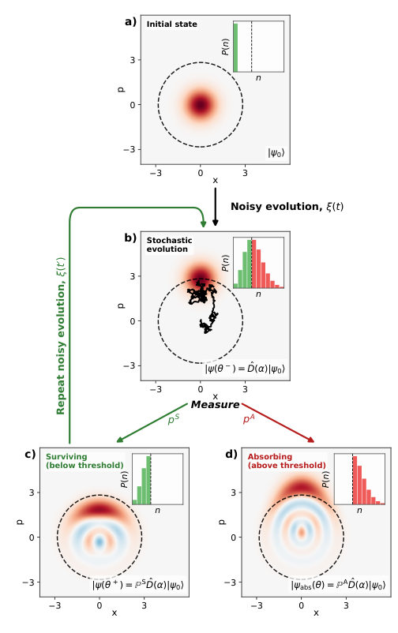
<figcaption class="paper-figure-caption"><b>Fig 1.</b> FIG. 1. Illustration of a single trajectory of the first-passage process generated using a Monte Carlo wavefunction method. The Wigner function W(x, p) of the wavefunction at each stage is shown. (a) Starting in the ground state |0⟩, the noise ξ(t) randomly displaces the wavefunction for a dura- tion θ, producing the state (b), after which time the energy- barrier measurement with threshold NB is performed (here with NB = 4). The measurement truncates the wavefunction, as shown in the histogram of occupation probabilities. The two possible postmeasurement states (c) and (d) are shown. The process repeats until an absorbing outcome is obtained.</figcaption>
</figure>
<figure class="paper-figure-card">
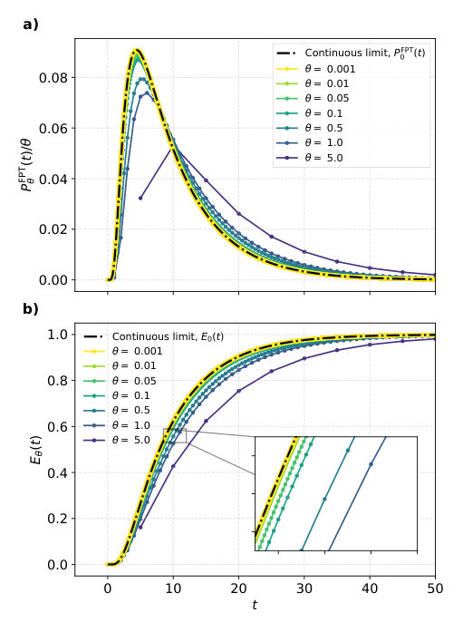
<figcaption class="paper-figure-caption"><b>Fig 2.</b> FIG. 3. (a) First-passage-time distributions and (b) cumula- tive escape probability distributions for NB = 10 , N0 = 0 and various θ. For finite-θ, these are discrete distributions defined on the grid t = mθ, with m = 1, 2, . . .. We also show the infinitely frequent measurement limit densities P FPT 0 (t) and E0(t).</figcaption>
</figure>
<figure class="paper-figure-card">
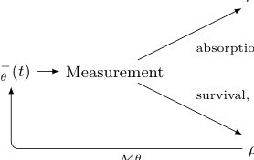
<figcaption class="paper-figure-caption"><b>Fig 3.</b> FIG. 2. Schematic of the repeated measurement protocol in the ensemble picture. The initial state ρi evolves under the master equation propagator eMθ to the premeasurement state ρ− θ (t = θ). A measurement then produces either a survival outcome, with probability P S θ (t = θ), leaving the system in the postmeasurement state ρ+ θ (t = θ), or an absorption out- come, with probability P A θ (t = θ), leading to ρabs(t = θ). In this case, the process stops. Following a survival outcome, the postmeasurement state is propagated for another interval θ, and the cycle repeats.</figcaption>
</figure>
<figure class="paper-figure-card">
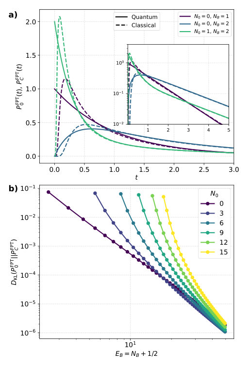
<figcaption class="paper-figure-caption"><b>Fig 4.</b> FIG. 4. (a) Continuous-time quantum (solid lines) and clas- sical (dashed lines) FPTDs for a given starting energy E0 = (N0 + 1/2) and threshold energy EB = (NB + 1/2). (b) Kull- back–Leibler divergence DKL(P FPT 0 ||P FPT C ) between quantum and classical FPTDs for different initial and threshold ener- gies. The points corresponding to NB −N0 = 1 are omitted as the classical density essentially vanishes at zero time, and so the KL integrand is logarithmically divergent.</figcaption>
</figure>
<figure class="paper-figure-card">
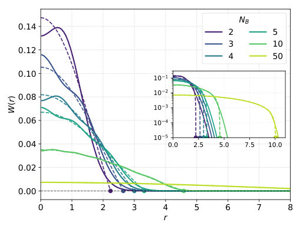
<figcaption class="paper-figure-caption"><b>Fig 5.</b> FIG. 6. The radial profiles of the rotationally symmetric Wigner function W(r = p</figcaption>
</figure>
</div>

<p><strong>Summary.</strong> This paper analyzes how monitoring an open quantum oscillator affects its escape time statistics, comparing quantum predictions against classical expectations. By using both density matrix and trajectory methods, the authors show that while measurement protocols can generate nonclassical states, the deviation from classical behavior diminishes as the energy threshold increases. It provides a theoretical framework for understanding quantum-to-classical crossovers in monitored systems.</p>
<p><strong>Why it may be interesting.</strong> This work directly addresses open quantum systems dynamics under measurement backaction, a core topic in modern AMO physics. The connection between measurement statistics (FPTD) and the emergence of nonclassical resources is highly relevant for quantum control and sensing.</p>
<details>
<summary>Detailed structure</summary>
<p><strong>Main problem.</strong> The study investigates the first-passage time statistics for open quantum systems undergoing continuous monitoring, focusing on the crossover between quantum and classical behavior.</p>
<p><strong>Main result.</strong> Projective measurements cause significant deviations in first-passage times at low energy thresholds compared to classical predictions, but these differences diminish as the threshold increases. The analysis provides a framework to generate nonclassical states via measurement protocols.</p>
<p><strong>Method.</strong> The authors employ both ensemble-averaged density matrix dynamics and trajectory-resolved stochastic pure-state dynamics to model the system evolution under repeated projective measurements.</p>
<p><strong>Model / system.</strong> The physical model is a harmonic oscillator driven by classical additive noise, which serves as an open quantum system. The dynamics are governed by master equations incorporating stroboscopic projective measurements at intervals $\theta$.</p>
<p><strong>Key observables.</strong> First-passage time distribution (FPTD), nonclassical signatures like persistent Wigner negativity, and the Kullback–Leibler divergence quantifying the quantum-classical difference.</p>
<p><strong>Important parameters / regimes.</strong> The measurement threshold energy ($E_B$ or $N_B$), the measurement interval ($\theta$), and the initial state energy level ($N_0$).</p>
<p><strong>Assumptions / limitations.</strong> The analysis assumes measurements are fast relative to the measurement interval $\theta$, and it explores the limit of infinitely frequent measurements ($\theta \to 0$) for continuous-time results.</p>
<p><strong>Figures summary.</strong> Figures illustrate single trajectories, schematic protocols detailing master equation propagation, calculated continuous limits for FPTDs compared to classical counterparts, and plots showing non-Gaussianity evolution over time.</p>
<p><strong>Paper structure.</strong> The paper progresses by first defining the problem using a harmonic oscillator model, developing both density matrix and trajectory approaches, deriving analytical solutions for the continuous quantum FPTD (using Laguerre polynomials), comparing these results to classical stochastic averages, and finally analyzing non-Gaussianity and Wigner function signatures across different energy regimes.</p>
</details>
<details>
<summary>Abstract</summary>
<p>The quantum first-passage problem involves stochastic trajectories conditioned on measurement outcomes. The timing statistics of such trajectories remain largely unexplored in open quantum systems. Here, we investigate the first-passage time to an energy threshold for a ubiquitous model: a harmonic oscillator driven by classical additive noise. We find that projective measurements and energy quantization lead to substantial differences between the quantum and classical first-passage-time distributions at low thresholds, while these differences gradually diminish as the threshold energy increases. We treat the problem using both ensemble-averaged conditioned density-matrix dynamics and trajectory-resolved stochastic pure-state dynamics. The two descriptions yield indistinguishable timing statistics. Quantization effects appear in the ensemble-level phase-space distributions of the surviving states and vanish at larger threshold energies. Individual trajectories reveal emergent quantum signatures from the repeated measurements, such as persistent Wigner negativity. Our results provide a framework for using first-passage processes to create measurement-induced nonclassical resource states and to study the quantum-classical crossover of monitored systems.</p>
</details>
<p><sub><a href="#top">↑ back to top</a></sub></p>

<p><a id="paper-2608.09205"></a></p>
<h3 id="evidence-for-counterfactual-violation-of-local-conservation-laws-in-quantum-events"><a href="http://arxiv.org/abs/2608.09205v1">Evidence for Counterfactual Violation of Local Conservation Laws in Quantum Events</a></h3>
<p><strong>Authors:</strong> Patrick Cameron, Francesco Di Colandrea, Filippo Cardano, Lorenzo Marrucci<br>
<strong>Type:</strong> experiment · <strong>Category:</strong> other · <strong>PDF:</strong> <a href="https://arxiv.org/pdf/2608.09205v1">https://arxiv.org/pdf/2608.09205v1</a><br>
<strong>Analysis basis:</strong> full PDF text, analyzed in chunks
<strong>Topic relevance:</strong> 🔥 <code>quantum optics experiment</code> <strong>4/5</strong> · <code>interference shaping light</code> <strong>3/5</strong> · <code>quantum measurements</code> <strong>2/5</strong> · <code>Full counting statistics</code> <strong>1/5</strong> · <code>analog quantum simulation</code> <strong>1/5</strong> · <code>correlated / nonlocal dissipation</code> <strong>1/5</strong> · <code>methods for driven-dissipative</code> <strong>1/5</strong></p>
<div class="figure-strip-hint">↔ Scroll figures horizontally</div>
<div class="paper-figures-scroll">
<figure class="paper-figure-card">
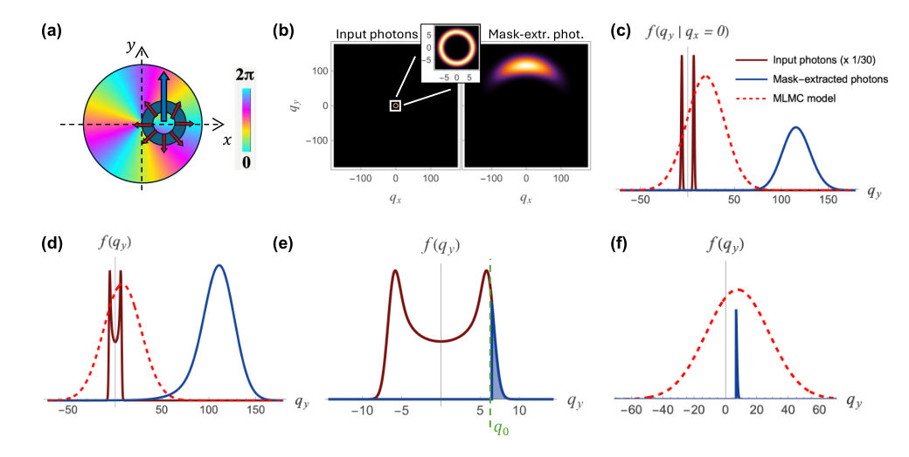
<figcaption class="paper-figure-caption"><b>Fig 1.</b> FIG. 1. Concept of the momentum non-conservation experiment and an idealized case. (a) A mask is used to extract photons from a small spatial region of the input vortex wavefunction, close to the vortex core. The extracted photons exhibit a large “superkick” momentum in the direction of the local phase gradient (large blue vertical arrow), superimposed on random momentum kicks due to the mask (smaller red arrows). All momentum scales are in units of ℏ/w0. (b)-(d) show the calculated photon behavior for an input vortex charge ℓ= 20 and a Gaussian extraction mask with wM = 0.05w0 centered at xM = dM = 0.03w0. (b) Two-dimensional (2D) normalized momentum distributions for the input photons...</figcaption>
</figure>
<figure class="paper-figure-card">
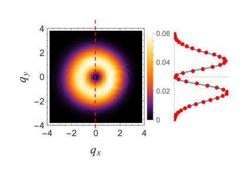
<figcaption class="paper-figure-caption"><b>Fig 2.</b> FIG. 2. Input LG mode used for our experiments, with vor- tex charge ℓ= 1. Experimental normalized two-dimensional momentum distribution (that is, spatial distribution in the fo- cal plane of an imaging lens) obtained in the photon-counting regime. Momentum units are ℏ/w0. Brightness is propor- tional to the photon counts per pixel. The side panel shows the vertical cut through the vortex for qx = 0: the red dots are data (the error bars are smaller than the symbols) and the blue curve is theory. No fitting parameters are used.</figcaption>
</figure>
<figure class="paper-figure-card">
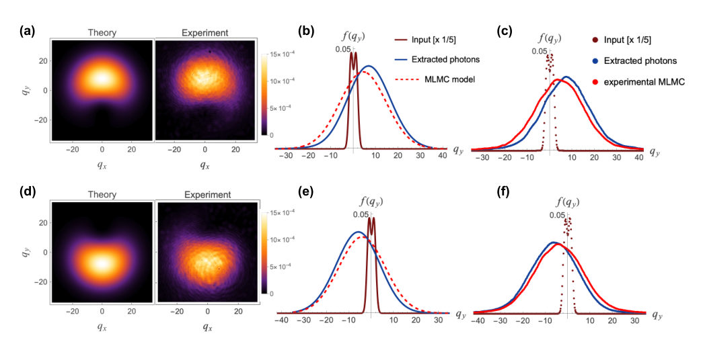
<figcaption class="paper-figure-caption"><b>Fig 3.</b> FIG. 3. Main experimental results, providing evidence for a violation of local momentum conservation. The input vortex has charge ℓ= 1, and the extraction mask has nominal values wM = 0.1w0 and dM = 0.1w0, corresponding to a mask transmission probability Ptr = 2.7 × 10−4. All momentum scales are in units of ℏ/w0. (a) Theoretical (left) and measured (right) 2D normalized momentum distributions of photons transmitted by the mask, showing the “superkick” average momentum ¯qT y &gt; 0. (b) Computed marginal distributions of qy for the input photons (brown solid line, divided by 5 for visibility), the MLMC null hypothesis (red dashed line), and the mask-extracted photons (blue solid line). No...</figcaption>
</figure>
<figure class="paper-figure-card">
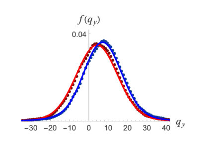
<figcaption class="paper-figure-caption"><b>Fig 4.</b> FIG. 4. Comparison of the experimental momentum distri- butions shown in Fig. 3(c) with a model that also includes a small broadening effect attributed to optical apodization by finite-diameter imaging optics in intermediate propagation planes downstream of the mask. The data are downsampled for visual clarity. The two parameters of this model (see Ap- pendix D) are obtained by fitting the data. The blue dots and line represent the mask-transmitted photons; the red dots and line represent the MLMC model. Error bars are smaller than the symbols.</figcaption>
</figure>
<figure class="paper-figure-card">
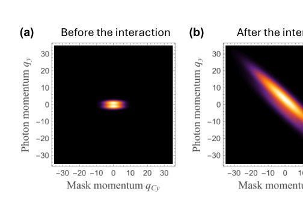
<figcaption class="paper-figure-caption"><b>Fig 5.</b> FIG. 5. Analysis of the qy momentum balance in the mask-photon interaction, for wM</figcaption>
</figure>
</div>

<p><strong>Summary.</strong> The research experimentally investigates whether individual quantum events can violate local conservation laws, using photons extracted from optical vortices. By measuring the transverse momentum of these selected photons, the authors demonstrate a statistically significant 'superkick' exceeding theoretical bounds derived from local momentum conservation. This suggests a new form of quantum nonlocality observable without relying on entanglement.</p>
<p><strong>Why it may be interesting.</strong> This work directly probes fundamental symmetries (conservation laws) at the single-event quantum level in an optical setting, providing a novel platform to test foundational physics beyond standard entanglement measures.</p>
<details>
<summary>Detailed structure</summary>
<p><strong>Main problem.</strong> The paper aims to provide experimental evidence for a potential violation of local conservation laws, specifically momentum, during individual quantum events.</p>
<p><strong>Main result.</strong> The measurement shows that the mean transverse momentum of extracted photons statistically exceeds the bound predicted by assuming local momentum conservation, suggesting a distinct form of quantum nonlocality.</p>
<p><strong>Method.</strong> Photons are extracted from a superoscillatory region near an optical vortex core using a small transmission mask and their resulting momentum distribution is analyzed.</p>
<p><strong>Model / system.</strong> The physical system involves photons propagating in Laguerre-Gauss (LG) modes, where the extraction process creates a non-classical momentum signature termed 'superkick'.</p>
<p><strong>Key observables.</strong> Mean transverse momentum ($ar{q}_{Ty}$), excess count rate of high-momentum photons, and comparison between measured distributions and theoretical bounds.</p>
<p><strong>Important parameters / regimes.</strong> The analysis relies on the properties of superoscillations, the mask transmission probability ($P_{tr}$), and the input vortex parameters ($\ell=1$).</p>
<p><strong>Assumptions / limitations.</strong> Key assumptions include that the violation is counterfactual (postselection) and does not conflict with relativistic causality; experimental analyses must account for optical apodization and pedestal effects.</p>
<p><strong>Figures summary.</strong> Figures illustrate the concept of momentum extraction from a vortex core, comparing input, extracted, and theoretically bounded momentum distributions. Later figures detail marginal $q_y$ distributions showing agreement/discrepancy based on modeling artifacts like apodization.</p>
<p><strong>Paper structure.</strong> The paper progresses from establishing the theoretical basis (APR's work on superoscillations) to detailing the experimental setup using optical vortices, performing rigorous data processing (hot pixel correction, pedestal subtraction), and finally presenting statistical tests showing violation of local momentum conservation bounds.</p>
</details>
<details>
<summary>Abstract</summary>
<p>Physical conservation laws, such as those of energy and momentum, are generally believed to hold exactly and locally in spacetime, including in quantum phenomena. Yet Aharonov, Popescu, and Rohrlich (APR) recently argued, on the basis of a thought experiment, that individual quantum events, unlike ensemble averages, may occasionally violate local conservation laws. Their argument relies on the wave phenomenon known as "superoscillations", which APR themselves discovered more than 30 years ago. Here we provide experimental evidence for such a violation. We extract photons from a small superoscillatory region near the core of an optical vortex and show that their mean transverse momentum is statistically incompatible with a general bound implied by local momentum conservation. The derivation of this bound requires only the theoretically well-supported assumption that the extraction mechanism does not alter the photons' mean transverse momentum. We also detect photons with high transverse momentum at a rate significantly exceeding that predicted by a model assuming local momentum conservation. Because this violation can be established only counterfactually and through postselection, it does not conflict with relativistic causality. Our results may represent the first example of a distinct form of quantum nonlocality that does not explicitly rely on entanglement.</p>
</details>
<p><sub><a href="#top">↑ back to top</a></sub></p>

<p><a id="paper-2608.09346"></a></p>
<h3 id="a-high-performance-quantum-pulse-gate-in-thin-film-lithium-niobate"><a href="http://arxiv.org/abs/2608.09346v1">A high-performance quantum pulse gate in thin-film lithium niobate</a></h3>
<p><strong>Authors:</strong> Silia Babel, Alejandra Alarcón, Laura Serino, Christian Golla, Laura Bollmers, Sebastian Lengeling, Jiayu Yang, Bernhard Reineke, Christof Eigner, Benjamin Brecht, Marko Lončar, Laura Padberg, Christine Silberhorn<br>
<strong>Type:</strong> experiment · <strong>Category:</strong> quantum information and computing · <strong>PDF:</strong> <a href="https://arxiv.org/pdf/2608.09346v1">https://arxiv.org/pdf/2608.09346v1</a><br>
<strong>Analysis basis:</strong> full PDF text, analyzed in chunks
<strong>Topic relevance:</strong> 🔥 <code>QC/QI experiment</code> <strong>4/5</strong> · <code>quantum optics experiment</code> <strong>3/5</strong> · <code>quantum measurements</code> <strong>2/5</strong> · <code>analog quantum simulation</code> <strong>1/5</strong> · <code>driven-dissipative phase transition</code> <strong>1/5</strong> · <code>interference shaping light</code> <strong>1/5</strong></p>
<div class="figure-strip-hint">↔ Scroll figures horizontally</div>
<div class="paper-figures-scroll">
<figure class="paper-figure-card">
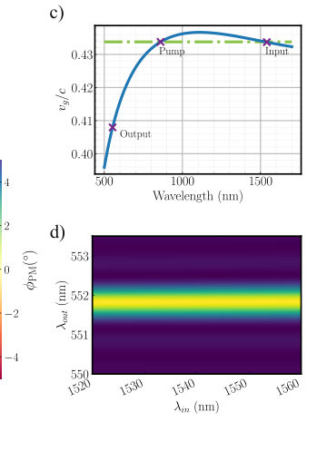
<figcaption class="paper-figure-caption"><b>Fig 1.</b> Fig. 1. Simulation for finding a suitable waveguide geometry for a TFLN QPG. a) Waveguide geometry in TFLN with the important parameters. b) The heat map shows the phase matching angle 𝜙PM for different top widths 𝑤and etching depths ℎ. From these simulations we choose the geometry marked with the red rectangle. c) Group velocity as function of the wavelength for the chosen geometry. We mark the output, pump and input signal. The horizontal line shows that this geometry yields group velocity matching between input signal and pump. d) Simulated phase matching intensity |Φ(𝜆in, 𝜆out)|2. Due to group velocity matching the phase matching is oriented horizontally.</figcaption>
</figure>
<figure class="paper-figure-card">
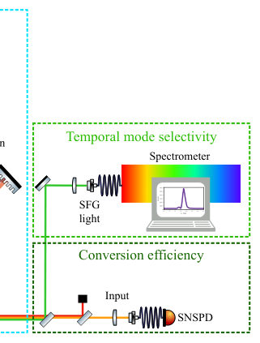
<figcaption class="paper-figure-caption"><b>Fig 2.</b> Fig. 2. Sketch of the experimental setup for benchmarking the TFLN QPG. The input signal and pump TMs are shaped using a commercial and a home-built waveshaper, respectively. Both fields are coupled to the sample and the generated green output light is measured with a single-photon sensitive spectrometer while the transmitted input signal photons are counted with superconducting nanowire single photon detectors. BS: beam splitter, 𝜆</figcaption>
</figure>
<figure class="paper-figure-card">
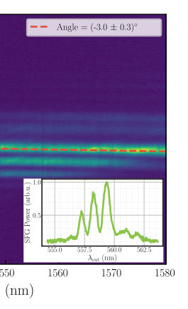
<figcaption class="paper-figure-caption"><b>Fig 3.</b> Fig. 3. Map of the phase matching intensity |Φ(𝜆in, 𝜆out)|2. The angle of the phase matching function evaluates to 𝜙PM = (−3.0 ± 0.3)◦, thus verifying operation close to perfect group velocity matching. The inset shows a cut through the phase matching intensity at 𝜆in = 1550 nm. The two prominent side lobes to the left of the main peak are likely caused by fabrication imperfections and will be spectrally filtered during further measurements.</figcaption>
</figure>
<figure class="paper-figure-card">
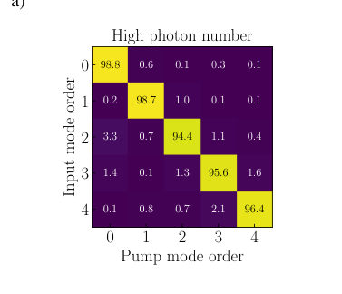
<figcaption class="paper-figure-caption"><b>Fig 4.</b> Fig. 4. Temporal-mode selectivity plots for a) high and b) low input signal photon numbers. The numbers are the percentage of converted counts of a specific input signal TM for different pump TMs. The average temporal-mode selectivity for high photon numbers of around 3 · 104 per pulse is (96.8 ± 1.7)%, while it slightly reduces to (91.7±3.1)% for an average photon number of one per pulse, likely due to measurement noise.</figcaption>
</figure>
<figure class="paper-figure-card">
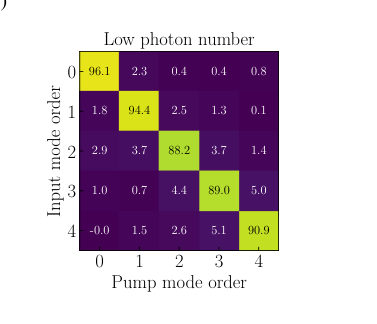
<figcaption class="paper-figure-caption"><b>Fig 5.</b> Figure 4 a) shows the results for pump and input powers of 2.0 mW and 0.3 µW (corresponding to around 3 · 104 photons per input pulse) in front of the waveguide, respectively. The dominant diagonal means that conversion primarily takes place when the input TM matches the target TM of the TFLN QPG and we obtain a high average temporal-mode selectivity of ¯𝑆= (96.8 ± 1.7)% over all target TMs. Next, we reduce the input photon number to, on average, one photon per pulse to demonstrate single photon operation. This step is crucial in QPG benchmarking because pump-induced noise can inhibit single-photon operation [49] and would show up as a steep drop in ¯𝑆. The results of this measurement,...</figcaption>
</figure>
</div>

<p><strong>Summary.</strong> The paper reports on the successful demonstration of a high-performance Quantum Pulse Gate using thin-film lithium niobate. By engineering the waveguide geometry, they overcame previous limitations in efficiency and spectral flexibility. The resulting device shows state-of-the-art performance, establishing TFLN as an ideal platform for practical photonic quantum technologies.</p>
<p><strong>Why it may be interesting.</strong> This work directly addresses hardware realization in quantum optics by demonstrating a scalable, high-efficiency component (QPG) crucial for building integrated photonic quantum circuits, which is highly relevant to quantum information processing architectures.</p>
<details>
<summary>Detailed structure</summary>
<p><strong>Main problem.</strong> The primary goal is to develop a high-performance Quantum Pulse Gate (QPG) for photonic quantum technologies, overcoming limitations in efficiency and operational flexibility.</p>
<p><strong>Main result.</strong> The authors demonstrated a QPG in thin-film lithium niobate with an average temporal-mode selectivity of $(96.8 \pm 1.7)\%$ and achieved a normalized conversion efficiency estimate three orders of magnitude higher than previous devices.</p>
<p><strong>Method.</strong> The work combines numerical simulations (using Lumerical) to design the waveguide geometry for optimal phase matching, followed by experimental measurements using single-photon detectors to characterize selectivity and conversion efficiency.</p>
<p><strong>Model / system.</strong> The physical platform is thin-film lithium niobate (TFLN), which enables a highly efficient type-0 Sum-Frequency Generation (SFG) process. The QPG relies on engineering waveguide dispersion to achieve group-velocity matching between input and pump fields.</p>
<p><strong>Key observables.</strong> Temporal-mode selectivity ($ar{S}$), internal conversion efficiency ($\eta$), and normalized conversion efficiency ($\eta_{	ext{norm}}$).</p>
<p><strong>Important parameters / regimes.</strong> High nonlinearity ($d_{33} = 27 	ext{ pm/V}$ in TFLN), specific waveguide dimensions ($w=1 \mu	ext{m}, h=500 	ext{ nm}$), and operating wavelengths ($\lambda_{	ext{in}} = 1540 	ext{ nm}$, $\lambda_p = 860 	ext{ nm}$).</p>
<p><strong>Assumptions / limitations.</strong> The reported normalized conversion efficiency is a conservative lower bound due to uncorrected coupling estimates; the analysis assumes successful dispersion engineering compensates for material limitations.</p>
<p><strong>Figures summary.</strong> Figures illustrate the simulation setup, phase matching intensity maps showing optimal geometry selection, and plots comparing measured internal conversion efficiency versus pump power against theoretical fits.</p>
<p><strong>Paper structure.</strong> The paper progresses from identifying the need for high-performance QPGs to detailing the TFLN platform's advantages. It covers design simulations (geometry optimization), experimental setup description, measurement of selectivity, and finally, quantitative characterization of the record-breaking conversion efficiency.</p>
</details>
<details>
<summary>Abstract</summary>
<p>In this work, we demonstrate a quantum pulse gate (QPG) in thin-film lithium niobate. QPGs enable the selective manipulation and detection of temporal modes of quantum light and form the basis of numerous applications in photonic quantum technologies. To date, their widespread adaption is held back by two main limitations: restricted wavelength and polarization combinations of the involved fields and low normalized conversion efficiencies. We overcome these limitations through developing a QPG in thin-film lithium niobate. We design a waveguide geometry that provides the required dispersion properties for a highly efficient type-0 sum-frequency generation.We verify our design through mapping of the phase matching intensity, and demonstrate high-quality QPG operation by measuring a temporal-mode selectivity of (96.8$\pm$1.7)% on par with existing QPGs. Thanks to the strong confinement in thin-film lithium niobate, we succeed in demonstrating an internal conversion efficiency of (89.6$\pm$0.1)% for a pump power of only 20mW in front of our sample. This yields a lower-bound estimate for the normalized conversion efficiency of (1810$\pm$10)$\mathrm{W}^{-1}\mathrm{cm}^{-2}$, three orders of magnitude higher than in previous QPGs. Our results establish thin-film lithium niobate as ideal platform for high-performance QPGs and are a major step towards practical QPGs for photonic quantum technologies.</p>
</details>
<p><sub><a href="#top">↑ back to top</a></sub></p>

<p><a id="paper-2608.08358"></a></p>
<h3 id="a-shared-observation-shields-collective-fluctuations-while-preserving-local-independence"><a href="http://arxiv.org/abs/2608.08358v1">A Shared Observation Shields Collective Fluctuations while Preserving Local Independence</a></h3>
<p><strong>Authors:</strong> Hu Cang<br>
<strong>Type:</strong> theory · <strong>Category:</strong> statistical mechanics · <strong>PDF:</strong> <a href="https://arxiv.org/pdf/2608.08358v1">https://arxiv.org/pdf/2608.08358v1</a><br>
<strong>Analysis basis:</strong> full PDF text, analyzed in chunks
<strong>Topic relevance:</strong> 🔥 <code>quantum measurements</code> <strong>4/5</strong> · <code>methods for driven-dissipative</code> <strong>3/5</strong> · <code>driven-dissipative phase transition</code> <strong>2/5</strong> · <code>Keldysh / 2PI / non-Gaussian methods</code> <strong>1/5</strong> · <code>correlated / nonlocal dissipation</code> <strong>1/5</strong> · <code>non-equilibrium universality</code> <strong>1/5</strong></p>
<div class="figure-strip-hint">↔ Scroll figures horizontally</div>
<div class="paper-figures-scroll">
<figure class="paper-figure-card">
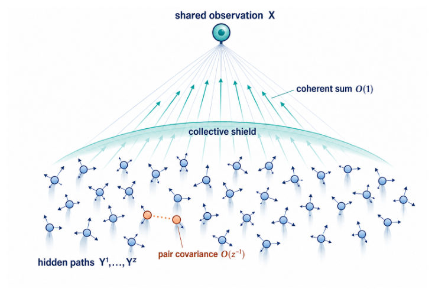
<figcaption class="paper-figure-caption"><b>Fig 1.</b> FIG. 1. One shared output constrains a whole population. The diagram is schematic and has no coordinate axes. In the tagged-particle reading, X is the measured tracer trajectory and the hidden paths Y 1, . . . , Y z are its caging neighbors. At fixed history the paths retain only O(z−1) pair covariance, but their coherent sum remains O(1). Conditioning on the endogenous observation X compresses that source-visible collective direction, represented by the translucent shield.</figcaption>
</figure>
<figure class="paper-figure-card">
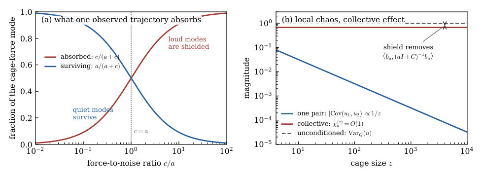
<figcaption class="paper-figure-caption"><b>Fig 2.</b> FIG. 2. A shared output selectively absorbs collective motion. (a) An eigenmode of one-path variance c splits into an absorbed share c/(a+c) and a surviving share a/(a+c) as its force-to-noise ratio c/a grows. (b) At fixed history, a tagged pair decorrelates as 1/z with the cage size z, the number of neighbors driving the record, while the normalized population sum retains the order-one shield ⟨bu, (aI + C)−1bu⟩. The dashed line shows the unconditioned collective scale.</figcaption>
</figure>
<figure class="paper-figure-card">
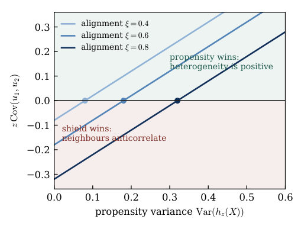
<figcaption class="paper-figure-caption"><b>Fig 3.</b> FIG. 3. Two sources set the sign of the cross-particle response. The shared-output shield produces anticorrelation below each line; history-to-history propensity variance produces positive correlation above it. Curves are labeled by the alignment ξ ∈[0, 1], the normalized overlap between the observable’s force coupling bu and the observed collective mode, for which the scalar shield is EδX = ξ2 Var(u) c/(a + c). The crossing implements Eq. (11) without an adjustable sign convention.</figcaption>
</figure>
<figure class="paper-figure-card">
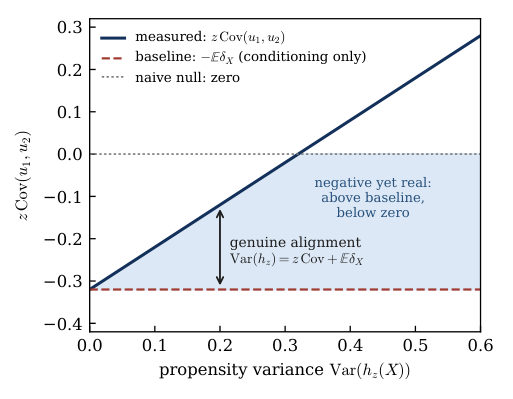
<figcaption class="paper-figure-caption"><b>Fig 4.</b> FIG. 4. Reading a susceptibility against the correct baseline. The conditioning-only reference for the cross-particle response is the negative baseline −EδX (dashed), not zero (dotted). Genuine alignment is the excess of the measurement over the baseline, Var(hz) = z Cov(u1, u2) + EδX (arrow). In the shaded band a measurement is negative yet sits above the baseline, so it still contains positive genuine alignment that a comparison with zero would miss. Parameters as in Figs. 2 and 3: Var(u) = 1, c/a = 1, ξ = 0.8, so EδX = 0.32.</figcaption>
</figure>
</div>

<p><strong>Summary.</strong> This theoretical work quantifies how measuring a collective property, such as the trajectory of one particle, constrains the entire system's underlying dynamics near a glass transition. It proves that this constraint introduces a predictable baseline suppression (the Schur shield) to fluctuations. Therefore, any measured deviation in cooperative behavior must be interpreted relative to this calculated baseline, providing a rigorous method for extracting true collective signals.</p>
<p><strong>Why it may be interesting.</strong> The rigorous mathematical framework connecting path conditioning (a concept relevant to quantum measurement theory) directly to measurable thermodynamic quantities like susceptibility provides a powerful tool for interpreting complex many-body dynamics observed in experiments.</p>
<details>
<summary>Detailed structure</summary>
<p><strong>Main problem.</strong> The paper investigates how conditioning on a shared, collective observation (like a tagged particle's trajectory) modifies the underlying dynamics and fluctuations of a system approaching a glass transition.</p>
<p><strong>Main result.</strong> Conditioning introduces a calculable, nonpositive baseline correction (the Schur shield) to the measured four-point susceptibility ($\chi_4$), meaning the true cooperative signal must be measured as an excess over this baseline rather than relative to zero.</p>
<p><strong>Method.</strong> The analysis employs Girsanov path transformations and stochastic process theory applied to a guiding Brownian model, allowing for exact computation of conditional joint laws.</p>
<p><strong>Model / system.</strong> The system models a liquid near its glass transition, characterized by heterogeneous dynamics. The core mechanism involves the influence of $z$ neighboring particles (the 'cage') on a single tagged particle whose motion generates the shared observation record.</p>
<p><strong>Key observables.</strong> Four-point susceptibility ($\chi_4$), covariance operators ($C$, $D$), and the Schur shield ($D - C$).</p>
<p><strong>Important parameters / regimes.</strong> The number of neighbors, $z$; the time window $[0, T]$; and the relative magnitude of local pair correlations versus collective sums.</p>
<p><strong>Assumptions / limitations.</strong> The results are nonasymptotic and dimension-free at a fixed observation window; extending to bulk $\chi_4$ across different tagged stars is noted as an open problem.</p>
<p><strong>Figures summary.</strong> Figure 1 schematically illustrates how one shared output constrains the population, represented by a translucent shield compressing the source-visible collective direction. Figure 2 details how eigenmode variances split upon conditioning.</p>
<p><strong>Paper structure.</strong> The paper develops the theory using Girsanov transformations to derive the penalty term and the Schur shield for the conditional law. It then analyzes pair correlations and compares local vs. collective observer sums, culminating in a physical interpretation of $\chi_4$ as an excess over the calculated baseline.</p>
</details>
<details>
<summary>Abstract</summary>
<p>As a liquid approaches its glass transition, its dynamics turns heterogeneous: mobile and immobile regions coexist, and the four-point susceptibility $χ_4$ that quantifies this heterogeneity grows sharply. Interpreting that growth is subtle, because the collective signals experiments record, such as a tagged particle's trajectory, an overlap function, or a mean field, are generated by the same particles they describe. Here we compute exactly what conditioning on such a shared record does to the population that produced it, for a broad class of stochastically observed systems; the guiding example is a tagged particle and the cage of $z$ neighbors that drives its force history. Using a Girsanov path transformation, we prove that the conditioning multiplies the independent joint law of the $z$ trajectories by exactly one term: a centered-square penalty along the single collective direction the record can see. Any fixed pair of particles stays nearly independent, with covariance falling as $O(z^{-1})$ and mutual information as $O(z^{-2})$, the property known as propagation of chaos, yet the $z(z-1)$ weak pair correlations add coherently into a finite suppression of collective fluctuations, the Schur shield $D - C = -C^2(aI + C)^{-1} \preceq 0$. An exactly solvable Brownian model calibrates the construction. The physical consequence is a calculable baseline for dynamical heterogeneity: conditioning itself contributes a computable, nonpositive amount to the susceptibility of a conditioned ensemble, so the genuine cooperative signal is the excess of the measured $χ_4$ over this baseline rather than over zero, a comparison that existing simulation data can already perform.</p>
</details>
<p><sub><a href="#top">↑ back to top</a></sub></p>

<p><a id="paper-2608.08109"></a></p>
<h3 id="bell-nonlocality-with-directly-generated-telecom-band-spin-photon-entanglement"><a href="http://arxiv.org/abs/2608.08109v1">Bell nonlocality with directly generated telecom-band spin-photon entanglement</a></h3>
<p><strong>Authors:</strong> Dong-Yu Huang, Jian Wang, Xiao-Long Zhou, Ze-Min Shen, Si-Jian He, Qi-Yang Huang, Yi-Jia Liu, Yu-Shu Chen, Quan Jiang, Chuan-Feng Li, Guang-Can Guo<br>
<strong>Type:</strong> experiment · <strong>Category:</strong> quantum information and computing · <strong>PDF:</strong> <a href="https://arxiv.org/pdf/2608.08109v1">https://arxiv.org/pdf/2608.08109v1</a><br>
<strong>Analysis basis:</strong> full PDF text, analyzed in chunks
<strong>Topic relevance:</strong> 🔥 <code>QC/QI experiment</code> <strong>4/5</strong> · <code>quantum optics experiment</code> <strong>3/5</strong> · <code>Tavis-Cummings &amp; cavity-many-emitter</code> <strong>2/5</strong> · <code>analog quantum simulation</code> <strong>1/5</strong> · <code>correlated / nonlocal dissipation</code> <strong>1/5</strong> · <code>quantum measurements</code> <strong>1/5</strong></p>
<div class="figure-strip-hint">↔ Scroll figures horizontally</div>
<div class="paper-figures-scroll">
<figure class="paper-figure-card">
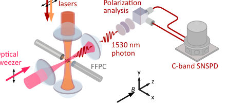
<figcaption class="paper-figure-caption"><b>Fig 1.</b> FIG. 1. Schematic diagram of the experimental setup. An optical tweezer traps the atom at the center of the FFPC. A magnetic field of 170 mG is applied along the z direction as a quantization axis. The emitted telecom photons are collected by one of the aspherical lenses placed along the quantization axis. For entanglement characterization, they are directed through a subsequent polarization analysis module and are detected by a two-channel superconducting nanowire single photon detector (SNSPD). The spectral filtering setup of the photons is omitted for clarity.</figcaption>
</figure>
<figure class="paper-figure-card">
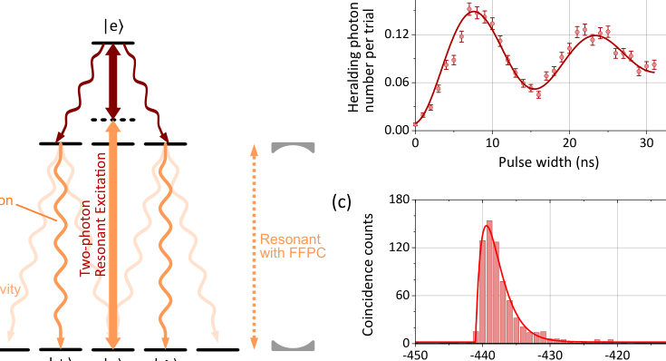
<figcaption class="paper-figure-caption"><b>Fig 2.</b> FIG. 2. (a) Protocol for entanglement generation between a single 87Rb atom and a C-band photon. Not all the Zeeman states are shown. (b) Rabi oscillation from |g⟩to |e⟩. The relative population of |e⟩is indicated by the detection of 780 nm heralding photons. A Rabi frequency of 61 MHz is extracted. (c) Two-photon coincidences between the 1530 nm telecom photons and the 780 nm heralding photons over a 10-hour experimental run. The horizontal axis shows the arrival time difference between the 780 nm photon and the 1530 nm detection event, with the large offset arising from the propagation delay of the 1530 nm signal through the long fiber and coaxial cable to the SNSPD located in another...</figcaption>
</figure>
<figure class="paper-figure-card">
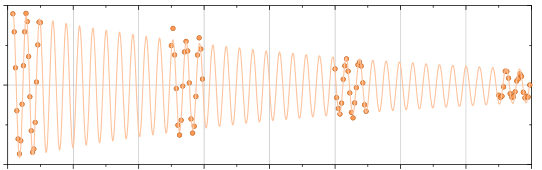
<figcaption class="paper-figure-caption"><b>Fig 3.</b> FIG. 3. (a) State-selective transfer scheme of atomic qubit measurement. For a laser configuration with the polarization of Ω2 expressed as c↓|σ+⟩+ c↑|σ−⟩, only the superposition state |ψ⟩:= c↓|↓⟩+ c↑|↑⟩is coupled to |D⟩, while its orthogonal opponent |ψ∗⟩remains unaffected. Particularly, when c↓= 0, i.e. the polarization of the laser field Ω2 is σ−, the configuration leads to the measurement of eigenstates {|↑⟩, |↓⟩}. Not all the Zeeman states are shown in the diagram. (b) Rabi oscillation between |←⟩:= (|↓⟩+ |↑⟩)/ √</figcaption>
</figure>
<figure class="paper-figure-card">
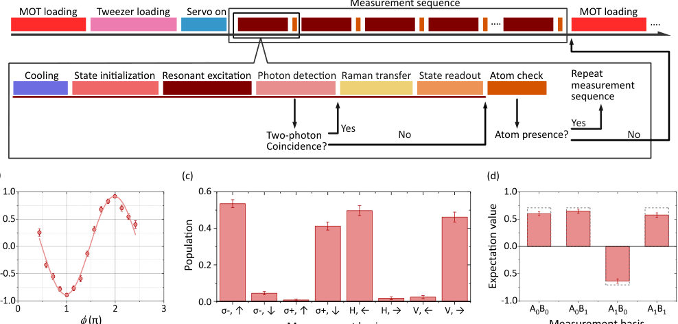
<figcaption class="paper-figure-caption"><b>Fig 4.</b> FIG. 4. (a) Experimental time sequence for characterizing the generated spin–photon entanglement. The main sequence begins with a 500-µs laser cooling and 40-µs state initialization. The atom is then excited to |e⟩and an FPGA controller starts to record two-photon coincidence. Once a coincidence event occurs, the atom is measured by Raman transfer and cavity-assisted fluorescence readout. Each run is ended with a fluorescence check of the presence of the atom, whose loss ends the main sequence and starts MOT loading again. (b) Nonclassical parity oscillation of the entangled state. The measurement basis of the photon is set to be the linear polarization, while the atomic basis is varied by...</figcaption>
</figure>
</div>

<p><strong>Summary.</strong> The research demonstrates the direct generation of spin-photon entanglement in the telecom C-band using a single Rubidium atom coupled to an optical cavity. By achieving high fidelity and violating a Bell inequality, the authors successfully verified quantum nonlocality, paving the way for scalable, long-distance quantum communication networks.</p>
<p><strong>Why it may be interesting.</strong> This work directly addresses a major bottleneck in quantum networking: generating high-fidelity entangled qubits at telecom wavelengths using solid-state or atomic emitters, providing a crucial building block for distributed quantum information protocols.</p>
<details>
<summary>Detailed structure</summary>
<p><strong>Main problem.</strong> The primary challenge is verifying quantum nonlocality using entanglement distributed via photons, which necessitates operating in the low-loss telecom C-band for long-distance quantum networks.</p>
<p><strong>Main result.</strong> The authors successfully generated spin-photon entanglement with fidelity exceeding 91.4% and verified Bell nonlocality by observing a violation of the CHSH inequality ($2.455(77) > 2$).</p>
<p><strong>Method.</strong> They utilized a cavity-assisted protocol involving resonant excitation in a single Rubidium atom to directly emit telecom C-band photons entangled with the atomic spin state.</p>
<p><strong>Model / system.</strong> The system uses a single $^{87}	ext{Rb}$ atom trapped within a fiber-based Fabry-Pérot micro-cavity. The entanglement is generated via a cascaded dipole transition, coupling the atomic spin qubit to the emitted telecom photon.</p>
<p><strong>Key observables.</strong> Bell state fidelity (&gt; 91.4%), Bell inequality violation ($S > 2$), and coincidence counts between 1530 nm and 780 nm photons.</p>
<p><strong>Important parameters / regimes.</strong> Telecom C-band (1530 nm), Rubidium transition wavelengths, Rabi frequencies ($\Omega_{ge} \approx 60 	ext{ MHz}$), and the CHSH parameter value.</p>
<p><strong>Assumptions / limitations.</strong> The overall heralded detection efficiency for the telecom photon is limited by various optical losses in the collection path.</p>
<p><strong>Figures summary.</strong> Figures illustrate the experimental setup (trapping, cavities, multiple laser sources) and time-domain measurements showing coincidence counts between the entangled photons and heralming signals.</p>
<p><strong>Paper structure.</strong> The paper details the complex engineering required for atomic trapping and state preparation (MOT $
ightarrow$ optical tweezer), followed by the specific protocol for two-photon excitation to generate entanglement, culminating in Bell test measurements.</p>
</details>
<details>
<summary>Abstract</summary>
<p>Quantum nonlocality, typically revealed through entanglement distribution across quantum networks, is a cornerstone of quantum information science. Long-distance distribution of entanglement requires the information carrier, i.e. flying photons, to operate in the minimum-loss telecom band of optical fiber. While extensive efforts have been devoted to the direct generation of entanglement between C-band telecom photons and various stationary spins, the verification of quantum nonlocality remains an outstanding challenge. Here, utilizing a dipole transition in rubidium atoms with a wavelength of 1530 nm and a cavity-assisted protocol, we achieve resonant excitation and direct emission of C-band telecom photons from a single atom, generating spin-photon entanglement with a measured Bell state fidelity exceeding 91.4%. We then verify Bell nonlocality by observing a Bell inequality violation of 2.455(77) &gt; 2 using this high-quality entangled pair. These results extend the wavelength of a single-atom quantum emitter to the telecom C-band, achieving sufficiently high-fidelity spin-photon entanglement to finally verify Bell nonlocality. This work thereby provides a promising building block for a large-scale atom-based quantum network capable of distributed quantum metrology and long-distance quantum communication.</p>
</details>
<p><sub><a href="#top">↑ back to top</a></sub></p>

<p><a id="paper-2608.08821"></a></p>
<h3 id="state-preparation-via-measurement-and-feedback-pushing-relations-state-structures-and-non-invertible-symmetries"><a href="http://arxiv.org/abs/2608.08821v1">State preparation via measurement and feedback: pushing relations, state structures, and non-invertible symmetries</a></h3>
<p><strong>Authors:</strong> Yabo Li, Aditi Mitra, Tsung-Cheng Lu<br>
<strong>Type:</strong> theory · <strong>Category:</strong> quantum information and computing · <strong>PDF:</strong> <a href="https://arxiv.org/pdf/2608.08821v1">https://arxiv.org/pdf/2608.08821v1</a><br>
<strong>Analysis basis:</strong> full PDF text, analyzed in chunks
<strong>Topic relevance:</strong> 🔥 <code>quantum measurements</code> <strong>4/5</strong> · <code>methods for driven-dissipative</code> <strong>3/5</strong> · <code>driven-dissipative phase transition</code> <strong>2/5</strong> · <code>analog quantum simulation</code> <strong>1/5</strong> · <code>correlated / nonlocal dissipation</code> <strong>1/5</strong> · <code>non-equilibrium universality</code> <strong>1/5</strong></p>
<div class="figure-strip-hint">↔ Scroll figures horizontally</div>
<div class="paper-figures-scroll">
<figure class="paper-figure-card">
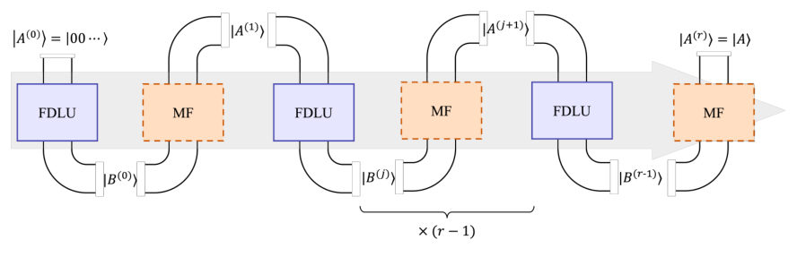
<figcaption class="paper-figure-caption"><b>Fig 1.</b> FIG. 1. Sequential preparation of the target state |A⟩from |00 · · ·⟩using circuits with local measurements and feedback corrections. In the sequence, |B(j)⟩is prepared from |A(j)⟩using FDLU, and |A(j+1)⟩is prepared from |B(j)⟩using a single round of local measurements and feedback corrections.</figcaption>
</figure>
<figure class="paper-figure-card">
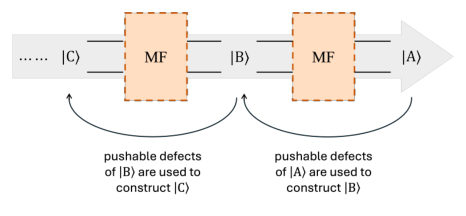
<figcaption class="paper-figure-caption"><b>Fig 2.</b> FIG. 2. The preparation scheme we propose for the target state |A⟩, in which we perform a sequence of MF circuits on a certain initial FDLU-preparable state, generating a sequence of states {· · · , |C⟩, |B⟩, |A⟩}. The construction of the state sequence from the target state |A⟩is in reverse order: the pushable defects of |A⟩are used to construct |B⟩; the pushable defects of |B⟩are used to construct |C⟩, etc. As discussed in the main text, certain rounds of MF circuits can be replaced by an FDLU circuit, which suggests that this scheme includes the general circuit architecture shown in Fig. 1.</figcaption>
</figure>
<figure class="paper-figure-card">
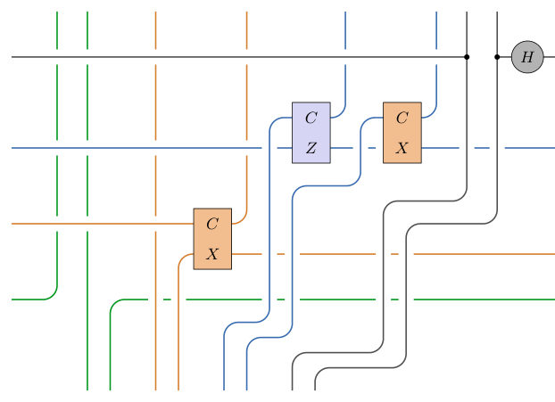
<figcaption class="paper-figure-caption"><b>Fig 3.</b> FIG. 3. When the virtual space is decomposed into four subspaces, respectively exhibiting pushing relations in class RIRI (green), RIRX (orange), RZRX (blue), and RILI (black), the MPS |A⟩is prepared from a product of multi-qudit states |ψΛ⟩ using a composition of parallel KW and KT dualities shown in this figure, up to transversal unitary circuit. The state structure for the RILI subspace is derived in Appendix E.</figcaption>
</figure>
</div>

<p><strong>Summary.</strong> The paper introduces 'pushable defects' as a novel diagnostic tool to systematically classify quantum states preparable via Measurement and Feedback circuits on MPS. It shows that these defect relations dictate the necessary preparation circuit depth and reveals an intrinsic link between this process and non-invertible symmetries in condensed matter physics.</p>
<p><strong>Why it may be interesting.</strong> This work provides a powerful algebraic tool (defect analysis) to characterize the computational power of measurement-based quantum computation protocols in 1D systems, linking it directly to fundamental concepts like symmetry protection.</p>
<details>
<summary>Detailed structure</summary>
<p><strong>Main problem.</strong> The primary goal is developing a systematic theoretical framework to characterize quantum states preparable using Measurement and Feedback (MF) circuits, extending beyond existing protocols.</p>
<p><strong>Main result.</strong> The authors establish that 'pushable defects' and their associated 'pushing relations' provide a unifying principle for classifying finite-depth MF-preparable states. This classification reveals deep connections between state preparation and non-invertible symmetries.</p>
<p><strong>Method.</strong> The methodology involves analyzing one-dimensional quantum systems using Matrix Product States (MPS) formalism, defining 'pushable defects' as virtual-bond operators that can be pushed through the tensor structure at the cost of a physical feedback unitary.</p>
<p><strong>Model / system.</strong> The model focuses on 1D quantum systems described by MPS. The preparation process alternates between local unitary operations (FDLU) and measurement/feedback rounds, analyzed via defect propagation in virtual bond spaces.</p>
<p><strong>Key observables.</strong> Pushable defects, pushing relations, the rank of the transfer matrix ($T_{\mathcal{A}}$), and the associated symmetry operators (e.g., Tambara-Yamagami duality).</p>
<p><strong>Important parameters / regimes.</strong> The number of measurement/feedback rounds required for preparation; coupling constants ($\lambda_i$) parameterizing the state structure.</p>
<p><strong>Assumptions / limitations.</strong> The analysis assumes that unwanted measurement outcomes can be compensated by feedback operations without requiring post-selection, and it builds upon characterizing defects in virtual spaces.</p>
<p><strong>Figures summary.</strong> Figure 1 illustrates the sequential preparation of a target state using alternating FDLU and MF circuits; other figures likely detail defect propagation or symmetry relations.</p>
<p><strong>Paper structure.</strong> The paper systematically develops the concept of pushable defects, first establishing conditions for single-round preparation (relating to FDLU states), then generalizing this iteratively for arbitrary depth, and finally connecting these structural constraints to underlying non-invertible symmetries.</p>
</details>
<details>
<summary>Abstract</summary>
<p>Quantum circuits with measurements and unitary feedback (MF) can prepare long-range entangled states in constant depth, but a systematic construction of the MF preparation circuit for a given target state remains underexplored. We develop such a scheme for one-dimensional states, based on the notion of pushable defects: virtual-bond operators of a matrix product state that can be pushed through the tensor at the price of a physical feedback unitary. We show that the set of pushable defects, together with their pushing relations classifies finite-depth MF-preparable states and dictates their preparation circuits. To each class of the target state $|A\rangle$, we associate a state $|B\rangle$ from which $|A\rangle$ can be prepared using a 1-round MF circuit; in particular, $|A\rangle$ is preparable from a product state using a circuit with 1 round of MF whenever $|B\rangle$ is preparable by a finite-depth local unitary (FDLU) circuit. For a general target state, the scheme is obtained by iterating this procedure until the associated state is FDLU-preparable. For open-boundary matrix product states, the scheme is complete: it constructs a preparation circuit whenever finite-depth MF preparation with left-conditioned feedback corrections is possible. Pushable defects and pushing relations thus emerge as a unifying principle for quantum state preparation via measurements and feedback. This characterization further reveals an intrinsic connection between MF circuits and non-invertible symmetries: states with certain classes of pushing relations are related to a product state by Tambara-Yamagami duality operators, or by continuous cosine symmetry operators with fusion rules $L_α L_{α'} = L_{α+α'} + L_{α-α'}$, together with their generalizations up to (not necessarily transversal) gates.</p>
</details>
<p><sub><a href="#top">↑ back to top</a></sub></p>

<p><a id="paper-2608.09518"></a></p>
<h3 id="compound-beams-for-direct-experimental-comparison-of-quantum-operations"><a href="http://arxiv.org/abs/2608.09518v1">Compound beams for direct experimental comparison of quantum operations</a></h3>
<p><strong>Authors:</strong> Kishore Thapliyal, Jan Perina, Pavel Pavlicek, Antonin Cernoch<br>
<strong>Type:</strong> experiment · <strong>Category:</strong> quantum information and computing · <strong>PDF:</strong> <a href="https://arxiv.org/pdf/2608.09518v1">https://arxiv.org/pdf/2608.09518v1</a><br>
<strong>Analysis basis:</strong> full PDF text, analyzed in chunks
<strong>Topic relevance:</strong> 🔥 <code>Full counting statistics</code> <strong>4/5</strong> · <code>quantum optics experiment</code> <strong>3/5</strong> · <code>quantum measurements</code> <strong>2/5</strong> · <code>QC/QI experiment</code> <strong>1/5</strong> · <code>interference shaping light</code> <strong>1/5</strong></p>
<div class="figure-strip-hint">↔ Scroll figures horizontally</div>
<div class="paper-figures-scroll">
<figure class="paper-figure-card">
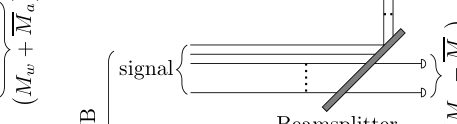
<figcaption class="paper-figure-caption"><b>Fig 1.</b> Figure 1. (a) Experimental setup involving nonlinear crystal LiIO3 as the source of photon pairs with the signal and idler photons propagating along different directions and synchronously detected by two APDs Ds and Di; F - frequency filter; L1, L2, L3 - lenses, MMF - multi-mode fiber. Schematic diagrams for PA and PS in a TWB are shown in (b) and (c), respectively, using the synchronized signal and idler channels. Whereas real PA requires an auxiliary TWBa and post-selection, PS is realized on the signal beam by inserting a beam splitter with transmissivity T effectively realized by specific grouping of detection windows in the signal channel: Mw, ¯ Ma, and ¯ Ms give in turn the number of...</figcaption>
</figure>
<figure class="paper-figure-card">
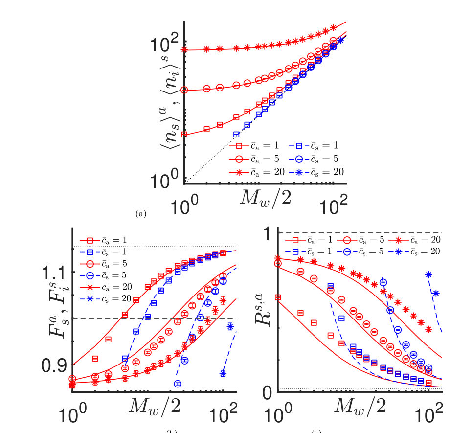
<figcaption class="paper-figure-caption"><b>Fig 2.</b> Figure 2. (a) Mean photon numbers ⟨ns⟩a [⟨ni⟩s] and (b) Fano factors F a s [F s i ] of the signal [idler] beam and (c) noise-reduction parameter Ra [Rs] for signal PATWB [PSTWB] as they depend on the number Mw of concatenated windows in the original TWB; logarithmic scale is used for Mw/2. PA [PS] states are shown by red smooth [blue dashed] curves for 1 (□), 5 (◦), and 20 (∗) added [subtracted] photons. Solid [dashed] curves originate in the Gaussian model while experimental data are plotted as isolated symbols with error bars (smaller than the symbols). Dotted lines give the values of the original TWB. The quantum-classical border (F = R = 1) is shown by dashed black horizontal lines in...</figcaption>
</figure>
<figure class="paper-figure-card">
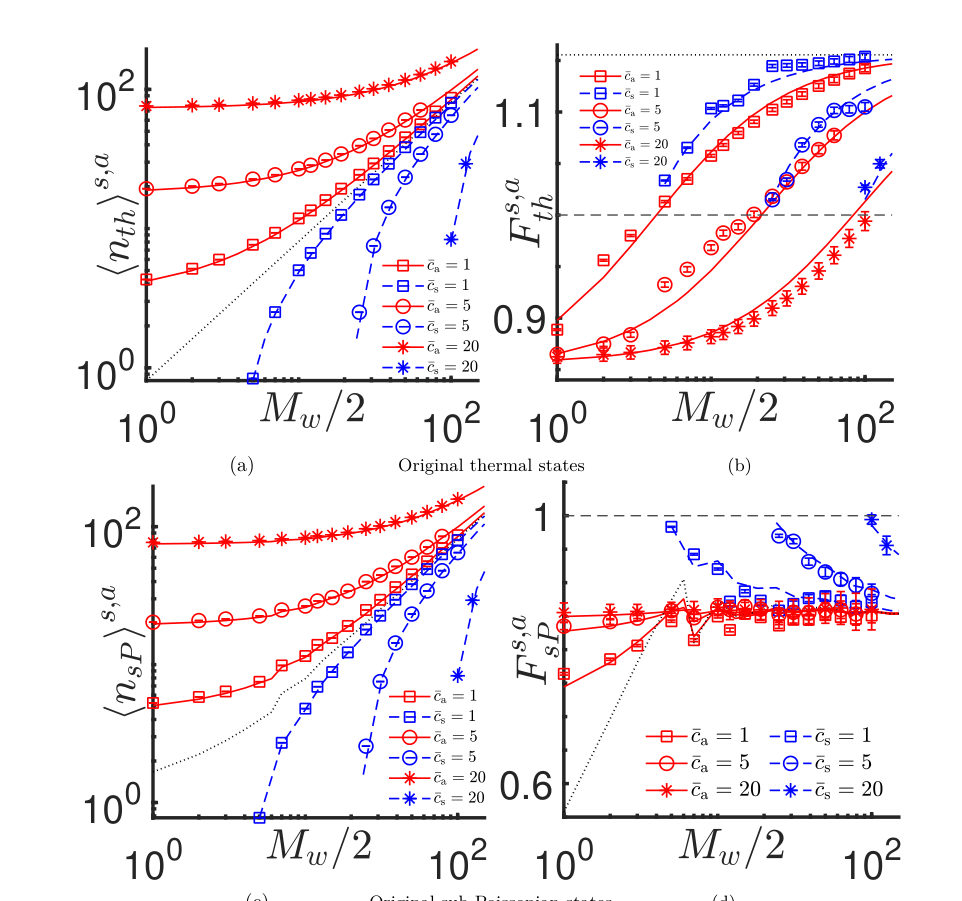
<figcaption class="paper-figure-caption"><b>Fig 3.</b> Figure 3. (a) [(c)] Mean photon number ⟨n⟩s,a th [⟨n⟩s,a sP ] and (b) [(d)] Fano factor F s,a th [F s,a sP ] in PSTS and PATS [PSSPS and PASPS] as they depend on the number of concatenated windows Mw in the original TS [SPS]; logarithmic scale is used for Mw/2. Dotted curves correspond to the original TS and SPS. More details are given in the caption to Fig. 2.</figcaption>
</figure>
<figure class="paper-figure-card">
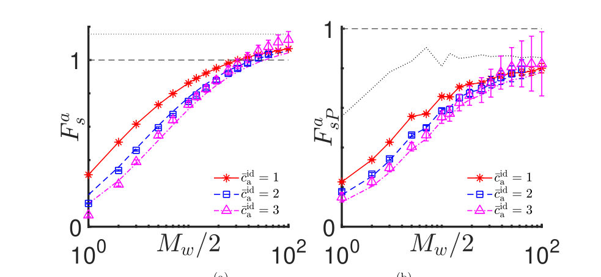
<figcaption class="paper-figure-caption"><b>Fig 4.</b> Figure 4. (a) [(b)] Fano factor F a th ≡F a s [F a sP] for ideal-PA in TS [SPS] as it depends on the number Mw of concatenated windows for 1 (red ∗), 2 (blue □), and 3 (magenta ∆) ideally-added photons; logarithmic scale is used for Mw/2. Curves originate in the Gaussian model while experimental data are plotted as isolated symbols with error bars. The black dotted curves characterize the original TS and SPS. The quantum-classical border F = 1 is shown by dashed black horizontal line.</figcaption>
</figure>
<figure class="paper-figure-card">
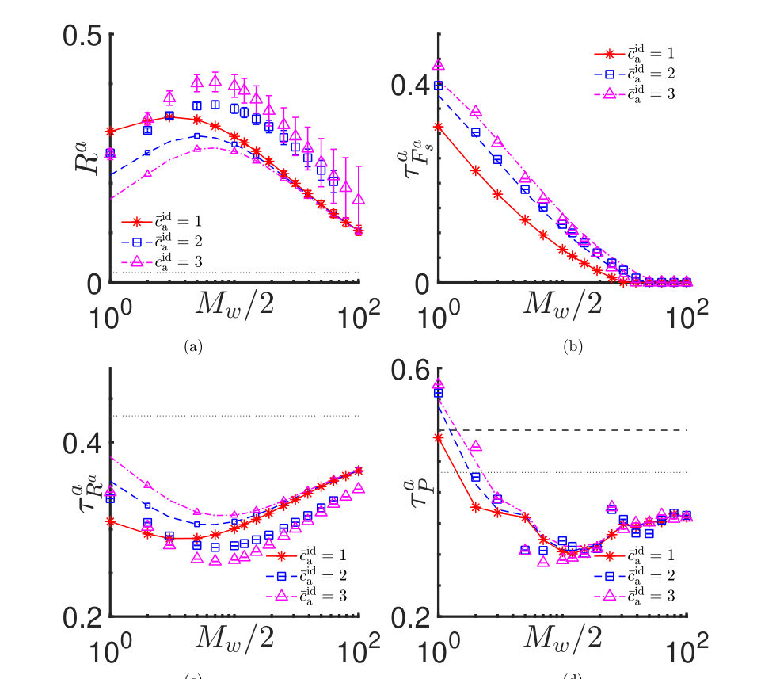
<figcaption class="paper-figure-caption"><b>Fig 5.</b> Figure 5. (a) Noise-reduction parameter Ra, and nonclassicality depths (b) τ a F a s , (c) τ a Ra, and (d) τ a P as they depend on the number Mw of concatenated windows for 1 (red ∗), 2 (blue □), and 3 (magenta ∆) photons ideally added into TWBs; logarithmic scale is used for Mw/2. Curves [in (a,c) marked by symbols] originate in the Gaussian model while experimental data are plotted as isolated symbols with error bars. The black dotted lines characterize the original TWBs. The Gaussian border τ = 0.5 in (d) is indicated by dashed black horizontal line. In (b,c,d) relative errors are smaller than 10% for smaller Mw and 20% for larger Mw.</figcaption>
</figure>
</div>

<p><strong>Summary.</strong> This paper presents an experimental framework using 'compound beams' derived from twin photon sources to compare the effects of photon addition and subtraction on various multi-mode quantum states. It quantitatively determines that the optimal operation depends critically on the initial state type, providing crucial guidelines for designing future quantum optical experiments.</p>
<p><strong>Why it may be interesting.</strong> This work directly addresses experimental feasibility in quantum optics by providing a unified platform to test fundamental non-Gaussian operations (PA/PS) necessary for advanced quantum protocols like metrology and communication.</p>
<details>
<summary>Detailed structure</summary>
<p><strong>Main problem.</strong> The study aims to provide a direct experimental comparison of quantum operations, specifically photon addition (PA) and photon subtraction (PS), when applied to various nonclassical multi-mode states.</p>
<p><strong>Main result.</strong> Photon addition is generally advantageous over photon subtraction for thermal and sub-Poissonian beams, while photon subtraction outperforms it for twin beams. The work also demonstrates near-ideal experimental photon addition using temporal correlations in compound twin beams.</p>
<p><strong>Method.</strong> The comparison is achieved by generating 'compound beams' from weak twin beams and analyzing the resulting photocount histograms after applying PA or PS operations.</p>
<p><strong>Model / system.</strong> The physical platform utilizes compound beams constructed from simple blocks detected simultaneously, derived from Type-I parametric down-conversion in a LiIO3 crystal. The analysis covers multi-mode thermal, sub-Poissonian, and twin beam states.</p>
<p><strong>Key observables.</strong> Nonclassicality (assessed via Fano factor $F < 1$), quantum correlations ($R < 1$), photocount histograms $f(c_s, c_i; M_w)$, and nonclassicality depth $ au$.</p>
<p><strong>Important parameters / regimes.</strong> Varying intensities over two orders of magnitude, and the ability to add/subtract up to twenty photocounts.</p>
<p><strong>Assumptions / limitations.</strong> The comparison is made possible by using compound beams, which overcome the limitation of requiring different sources for different quantum operations. The analysis relies on modeling complex distributions via photocount histograms.</p>
<p><strong>Figures summary.</strong> Figures illustrate the experimental setup using LiIO3 and schematic diagrams detailing the implementation of PA and PS on twin beams; Figure 2 compares nonclassicality (F) and correlations (R) for PA vs. PS.</p>
<p><strong>Paper structure.</strong> The paper builds from establishing the need for a fair comparison platform, details the construction of compound beams and the measurement techniques using photocount histograms, and finally presents comparative results showing the optimal operation (PA vs. PS) depending on the initial quantum state type.</p>
</details>
<details>
<summary>Abstract</summary>
<p>Compound beams composed of simple experimental blocks (detected in simultaneous detection windows) that form specific quantum-correlated structures are suggested for simulating the properties of different quantum operations used for creating highly nonclassical and entangled multi-mode states needed in quantum communication, metrology, and information protocols. Qualitative and quantitative comparison of multi-photon addition and subtraction in compound multi-mode thermal as well as sub-Poissonian beams and multi-mode twin beams with their intensities extending over two orders in magnitude is provided. Adding and subtracting up to twenty photocounts, optimal conditions for the generation of experimental nonclassical states are identified. In general, photon addition is identified as advantageous over photon subtraction for the multi-mode thermal and sub-Poissonian beams: It induces (enhances) the nonclassicality in the former (latter) state. Contrary to this, photon subtraction outperforms photon addition in the multi-mode twin beams. Moreover, exploiting temporal photon-pair correlations in compound twin beams when post-selecting, nearly ideal experimental photon(s) addition is demonstrated.</p>
</details>
<p><sub><a href="#top">↑ back to top</a></sub></p>

<p><a id="paper-2608.07929"></a></p>
<h3 id="all-electrical-coherent-control-of-a-single-rare-earth-spin-qubit"><a href="http://arxiv.org/abs/2608.07929v1">All-electrical Coherent Control of a Single Rare-earth Spin Qubit</a></h3>
<p><strong>Authors:</strong> Yaowu Liu, Dasom Choi, Stefano Reale, Jeongmin Oh, Seorhin Choi, Lei Fang, We-hyo Soe, Arzhang Ardavan, Andreas J. Heinrich, Soo-hyon Phark, Fabio Donati<br>
<strong>Type:</strong> experiment · <strong>Category:</strong> quantum information and computing · <strong>PDF:</strong> <a href="https://arxiv.org/pdf/2608.07929v1">https://arxiv.org/pdf/2608.07929v1</a><br>
<strong>Analysis basis:</strong> full PDF text, analyzed in chunks
<strong>Topic relevance:</strong> 🔥 <code>QC/QI experiment</code> <strong>4/5</strong> · <code>analog quantum simulation</code> <strong>2/5</strong> · <code>quantum measurements</code> <strong>2/5</strong> · <code>correlated / nonlocal dissipation</code> <strong>1/5</strong> · <code>methods for driven-dissipative</code> <strong>1/5</strong></p>
<div class="figure-strip-hint">↔ Scroll figures horizontally</div>
<div class="paper-figures-scroll">
<figure class="paper-figure-card">
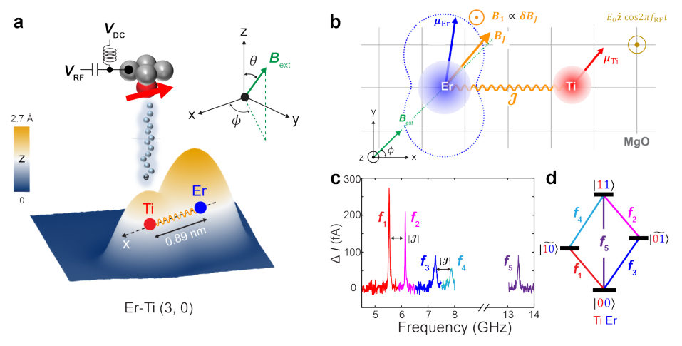
<figcaption class="paper-figure-caption"><b>Fig 1.</b> FIG. 1. Schematics and ESR spectrum of an Er-Ti pair. a, Schematic and three-dimensional</figcaption>
</figure>
<figure class="paper-figure-card">
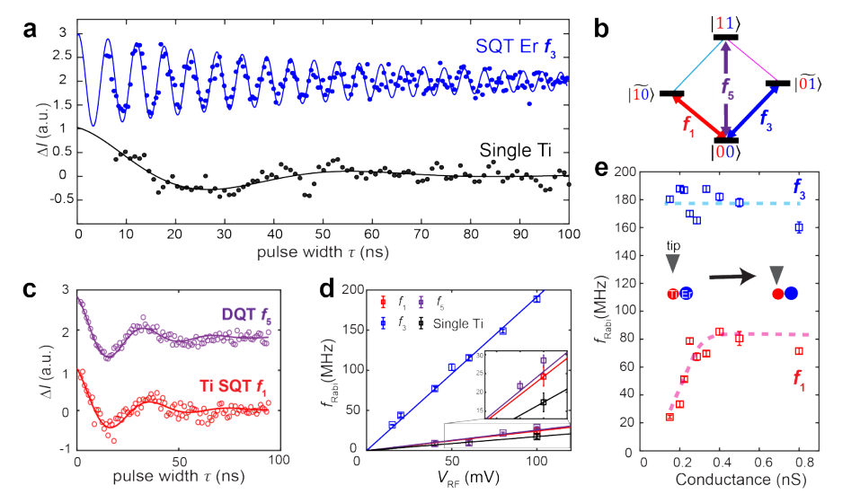
<figcaption class="paper-figure-caption"><b>Fig 2.</b> FIG. 2. Coherent control of the Er spin. a, Rabi oscillations of the f3 transition (fres = 7.28</figcaption>
</figure>
<figure class="paper-figure-card">
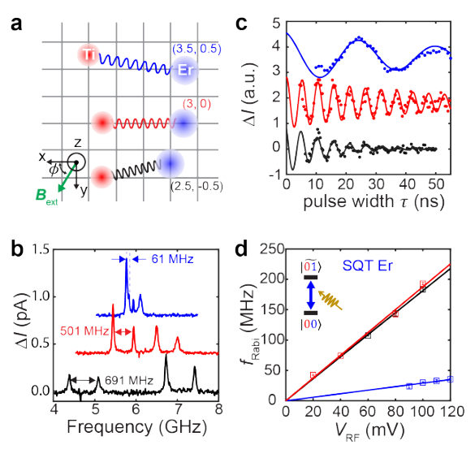
<figcaption class="paper-figure-caption"><b>Fig 3.</b> FIG. 3. Pair engineering. a, Schematics for three different pairs. The gray grid represents the</figcaption>
</figure>
<figure class="paper-figure-card">
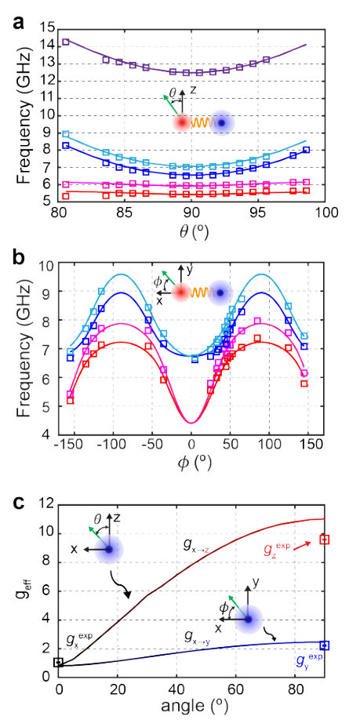
<figcaption class="paper-figure-caption"><b>Fig 4.</b> FIG. 4. Magnetic anisotropy of the Er-Ti (3, 0) pair. a, ESR transition energy as a function</figcaption>
</figure>
<figure class="paper-figure-card">
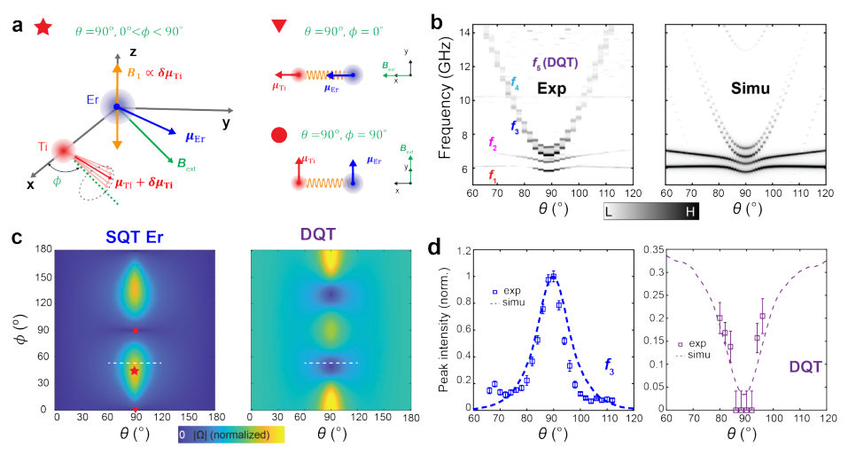
<figcaption class="paper-figure-caption"><b>Fig 5.</b> FIG. 5. Coherent control mechanism. a, Schematics of coherent control mechanism for special</figcaption>
</figure>
</div>

<p><strong>Summary.</strong> The paper reports on achieving all-electrical coherent control of a single rare-earth spin qubit using an Er-Ti pair system. By utilizing the anisotropy in the spin-spin exchange coupling, they achieved record high Rabi frequencies (near GHz) for the Er spin transition. This work opens a new route for ultrafast local control of challenging solid-state quantum systems.</p>
<p><strong>Why it may be interesting.</strong> This work directly addresses the physical realization of solid-state qubits by providing an electrical pathway (via anisotropic exchange) to manipulate highly shielded spins, which is crucial for scalable quantum computing architectures.</p>
<details>
<summary>Detailed structure</summary>
<p><strong>Main problem.</strong> The primary challenge is achieving all-electrical coherent control of single rare-earth (Er) spin qubits due to the strong shielding of their 4f electrons.</p>
<p><strong>Main result.</strong> The authors demonstrated all-electrical coherent control, achieving near-gigahertz Rabi frequencies for the Er spin transition—a ten-fold improvement over previous records. This establishes anisotropic exchange as a general resource for ultrafast control in solid-state quantum devices.</p>
<p><strong>Method.</strong> Scanning tunneling microscopy (STM)-based electron spin resonance (ESR) spectroscopy combined with three-dimensional magnetic-field control was used to map resonance and Rabi frequencies.</p>
<p><strong>Model / system.</strong> The system involves an Er-Ti spin pair adsorbed on a surface, modeled by a spin Hamiltonian incorporating exchange and dipolar interactions. The coherent drive is achieved by electrically modulating the anisotropic Er-Ti coupling.</p>
<p><strong>Key observables.</strong> Resonance and Rabi frequencies for various transitions ($f_1$ to $f_5$), anisotropy in the Er g-tensor and Er-Ti exchange interaction, and the dependence of these on external magnetic field angles ($    heta$).</p>
<p><strong>Important parameters / regimes.</strong> Near-gigahertz Rabi frequencies; linear scaling of Rabi frequencies with applied RF voltage ($V_{RF}$); anisotropic coupling strength $J$.</p>
<p><strong>Assumptions / limitations.</strong> The mechanism relies on transducing electrical excitations into an effective transverse driving field ($B_1$) via the anisotropic exchange interaction.</p>
<p><strong>Figures summary.</strong> Figures show ESR transitions and Rabi oscillations confirming high efficiency on the Er spin, comparing results across different atomic separations/orientations, and mapping angular dependencies of these frequencies.</p>
<p><strong>Paper structure.</strong> The work progresses from demonstrating basic all-electrical control to detailed characterization using Hamiltonian modeling. It maps out anisotropies in g-tensors and exchange coupling, culminating in a general mechanism for ultrafast spin manipulation via anisotropic exchange modulation.</p>
</details>
<details>
<summary>Abstract</summary>
<p>Electrical control of single spin qubits is a major frontier for nanoscale, high-speed, and scalable quantum devices. Yet, extending it to highly shielded rare-earth 4f electrons remains an experimental challenge across solid-state platforms. Here we demonstrate all-electrical coherent control of a single Er electron spin, which is exchange-coupled to a nearby Ti atom. Scanning tunneling microscopy-based electron spin resonance with three-dimensional magnetic-field control enables comprehensive mapping of the resonance and Rabi frequencies, revealing pronounced anisotropies in both the Er g-tensor and the Er-Ti exchange interaction. The electrical modulation of the anisotropic Er-Ti coupling results in an efficient drive of the Er spin, allowing us to achieve near-gigahertz Rabi frequencies - a ten-fold improvement over the present record for rare-earth spin qubits. By establishing anisotropic exchange as a general resource for electrically accessing shielded rare-earth spins, our results open a new route to ultrafast and local control of rare-earth spins in solid-state quantum devices.</p>
</details>
<p><sub><a href="#top">↑ back to top</a></sub></p>

<p><a id="paper-2608.07697"></a></p>
<h3 id="quantum-relaxometry-under-continuous-wave-excitation"><a href="http://arxiv.org/abs/2608.07697v1">Quantum Relaxometry Under Continuous Wave Excitation</a></h3>
<p><strong>Authors:</strong> Vladimir Verkhovlyuk, Chayma Bouchair, Oleg A. Anisimov, Anton Pershin, Adam Gali<br>
<strong>Type:</strong> experiment · <strong>Category:</strong> other · <strong>PDF:</strong> <a href="https://arxiv.org/pdf/2608.07697v1">https://arxiv.org/pdf/2608.07697v1</a><br>
<strong>Analysis basis:</strong> full PDF text, analyzed in chunks
<strong>Topic relevance:</strong> 🔥 <code>QC/QI experiment</code> <strong>4/5</strong> · <code>quantum measurements</code> <strong>3/5</strong> · <code>driven-dissipative phase transition</code> <strong>1/5</strong> · <code>methods for driven-dissipative</code> <strong>1/5</strong> · <code>quantum optics experiment</code> <strong>1/5</strong></p>
<div class="figure-strip-hint">↔ Scroll figures horizontally</div>
<div class="paper-figures-scroll">
<figure class="paper-figure-card">
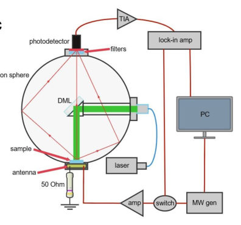
<figcaption class="paper-figure-caption"><b>Fig 1.</b> Fig. 1 A typical measurement protocol for the IN3x3 sample measured at -10 dBm MW power and a laser intensity of 0.3 W/cm2: (a) the cw-ODMR spectrum; (b) the X and Y components of the lock-in signal recorded at 2874 MHz as a function of the modulation frequency fm. The solid lines correspond to the fitting using equations (4) with Teff = 3.2 ms. (c) Scheme of cw-ODMR setup.</figcaption>
</figure>
<figure class="paper-figure-card">
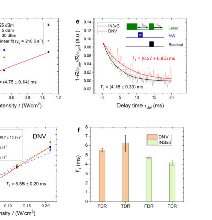
<figcaption class="paper-figure-caption"><b>Fig 2.</b> Fig. 2 Results of the T1 measurements in bulk samples. Dependence of the effective time Teff on the microwave radiation power at different laser intensities I for IN3x3 (a) and DNV (b) samples. Dependence of the effective rate 1/Teff on the laser intensity at different microwave power Pmw for IN3x3 (c) and DNV (d) samples. The time T1 is calculated based on linear approximations to zero laser power, shown by solid red lines. (e) Results of T1 measurement for IN3x3 (black) and DNV (red) samples using TDR protocol (inset). (f) Comparison between FDR and TDR measurement methods for IN3x3 and DNV samples. All errors here and throughout were determined based on fitting using analytical...</figcaption>
</figure>
<figure class="paper-figure-card">
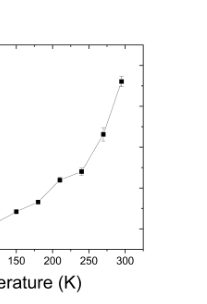
<figcaption class="paper-figure-caption"><b>Fig 3.</b> Fig. 3 Temperature dependence of the relaxation rate measured by the FDR method in the DNV sample.</figcaption>
</figure>
<figure class="paper-figure-card">
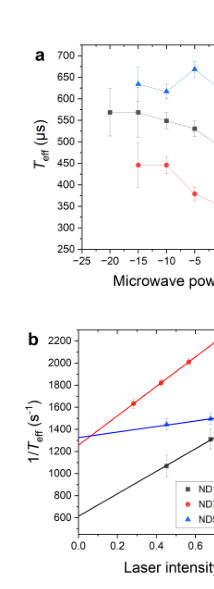
<figcaption class="paper-figure-caption"><b>Fig 4.</b> Fig. 4 (a) Dependence of the effective time Teff on the microwave radiation power for different sizes of nanodiamonds. (b) Dependence of the effective rate 1/Teff on the laser intensity for different sizes of nanodiamonds. The T1 time is calculated based on linear approximations to zero laser power, shown by solid lines.</figcaption>
</figure>
<figure class="paper-figure-card">
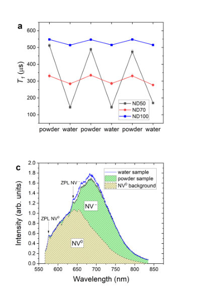
<figcaption class="paper-figure-caption"><b>Fig 5.</b> Fig. 5 (a) Results of comparative measurements of T1 time for aqueous and dry samples of three types of nanodiamonds. (b) Simulated fraction of stable NV−centers in spherical nanodiamonds as a function of particle size. Solid curves show the fraction of NV−in water and powder (UHV), calculated using a purely geometrical model that accounts for near-surface instability as the ratio of stable- to-total volume. The indicated instability depths were obtained based on density functional theory calculations [30]. Dashed curves represent intermediate cases corresponding to variable experimental conditions. (c) Photoluminescence spectra for ND50 (in water and powder) aligned with the NV0</figcaption>
</figure>
</div>

<p><strong>Summary.</strong> The authors introduce a novel continuous-wave (CW) technique to measure the spin-lattice relaxation time ($T_1$) of $    ext{NV}^-$ centers in diamond. By analyzing the frequency response of the ODMR signal, they overcome the temporal limitations of traditional pulsed methods. This CW approach allows for highly efficient and quantitative $T_1$ measurements across a wide range of timescales, making it ideal for nanoscale quantum sensing applications.</p>
<p><strong>Why it may be interesting.</strong> This work provides a robust, non-invasive spectroscopic tool for characterizing spin relaxation in solid-state quantum memories, which is crucial for developing practical quantum sensors and computing elements based on NV centers.</p>
<details>
<summary>Detailed structure</summary>
<p><strong>Main problem.</strong> Conventional pulsed quantum relaxometry protocols for measuring spin-lattice relaxation time (T1) are limited in temporal range and technically challenging for nanoscale systems.</p>
<p><strong>Main result.</strong> A continuous-wave (CW) frequency domain protocol was introduced that efficiently measures T1 over a vast dynamic range (60 $\mu$s to 200 ms), proving superior to pulsed methods, especially for nanodiamonds.</p>
<p><strong>Method.</strong> The technique uses optically detected magnetic resonance (ODMR) with low-frequency microwave amplitude modulation and lock-in detection to extract the effective time constant ($T_{	ext{eff}}$) in the frequency domain.</p>
<p><strong>Model / system.</strong> The system utilizes Nitrogen-Vacancy ($ ext{NV}^-$) centers in diamond as solid-state spin qubits. The dynamics are modeled using Bloch equations, relating the measured frequency response to the intrinsic relaxation time $T_1$.</p>
<p><strong>Key observables.</strong> Complex frequency response ($X$ and $Y$ components), effective time constant ($T_{	ext{eff}}$), and the intrinsic spin-lattice relaxation time ($T_1$).</p>
<p><strong>Important parameters / regimes.</strong> Microwave power ($P_{	ext{MW}}$), laser intensity ($I$), temperature, and modulation frequency ($f_m$).</p>
<p><strong>Assumptions / limitations.</strong> The response is approximated by a first-order low-pass filter in the low-frequency limit; linearity assumptions are made when extrapolating to zero drive power.</p>
<p><strong>Figures summary.</strong> Figures illustrate the ODMR spectrum, the lock-in detection procedure using modulation frequency sweeps ($f_m$), and plots showing $T_{	ext{eff}}$ dependence on microwave/laser powers used to extract $T_1$.</p>
<p><strong>Paper structure.</strong> The paper contrasts the limitations of time-domain pulsed protocols with the proposed continuous-wave, frequency-domain approach. It details the mathematical derivation linking the measured response function to $T_1$ and validates this method by comparing results across different diamond samples (bulk vs. nanodiamonds) under varying conditions.</p>
</details>
<details>
<summary>Abstract</summary>
<p>Quantum relaxometry is one of the most successful applications of nitrogen-vacancy (NV) centers in diamond and, more broadly, solid-state spin qubits, enabling ultrasensitive detection of magnetic noise and paramagnetic species via measurements of the spin-lattice relaxation time $T_1$. Conventional pulsed protocols, however, probe $T_1$ efficiently only over a limited temporal range, which restricts the scope and throughput of the technique. Here we introduce a continuous-wave quantum relaxometry protocol that operates in the frequency domain. By measuring the frequency response of the optically detected magnetic resonance signal under low-frequency microwave amplitude modulation, we extract $T_1$ from the characteristic response time of the spin system. The method enables efficient $T_1$ measurements spanning more than three orders of magnitude -- directly demonstrated from 60 $μ$s to 200 ms in our experiments -- across a broad temperature range and under substantial ensemble inhomogeneity. We further show that this protocol enables quantitative relaxometry-based sensing in nanodiamonds, achieving a substantial speed-up over the pulsed methods and offering a practical approach to optimizing nanodiamond size for enhanced sensitivity.</p>
</details>
<p><sub><a href="#top">↑ back to top</a></sub></p>

<p><a id="paper-2608.08181"></a></p>
<h3 id="hamiltonian-spectra-in-quantum-computers-through-the-generalized-eigenvalue-method"><a href="http://arxiv.org/abs/2608.08181v1">Hamiltonian spectra in quantum computers through the generalized eigenvalue method</a></h3>
<p><strong>Authors:</strong> Valery Simonyan, Greg Ridgway, Paulo Bedaque<br>
<strong>Type:</strong> both · <strong>Category:</strong> quantum information and computing · <strong>PDF:</strong> <a href="https://arxiv.org/pdf/2608.08181v1">https://arxiv.org/pdf/2608.08181v1</a><br>
<strong>Analysis basis:</strong> full PDF text, analyzed in chunks
<strong>Topic relevance:</strong> 🔥 <code>QC/QI experiment</code> <strong>4/5</strong> · <code>analog quantum simulation</code> <strong>3/5</strong> · <code>Keldysh / 2PI / non-Gaussian methods</code> <strong>1/5</strong> · <code>quantum measurements</code> <strong>1/5</strong></p>
<div class="figure-strip-hint">↔ Scroll figures horizontally</div>
<div class="paper-figures-scroll">
<figure class="paper-figure-card">
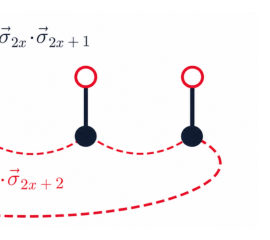
<figcaption class="paper-figure-caption"><b>Fig 1.</b> FIG. 1: Visualization of the Hamiltonian in Eq. 17.</figcaption>
</figure>
<figure class="paper-figure-card">
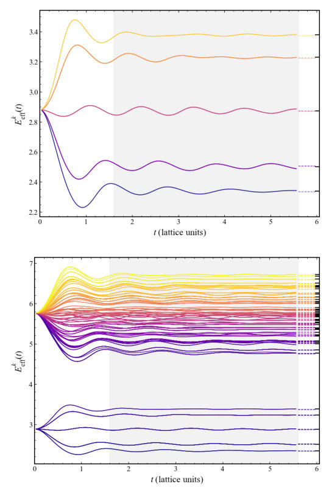
<figcaption class="paper-figure-caption"><b>Fig 2.</b> FIG. 2: Eigenvalues i</figcaption>
</figure>
<figure class="paper-figure-card">
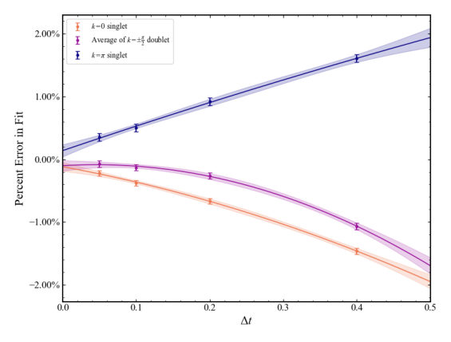
<figcaption class="paper-figure-caption"><b>Fig 3.</b> FIG. 3: Relative difference between extracted low-lying l = 0, m = 0 energy levels and exact ones. Here we use L = 4, the operator set 1, and T = 5.6. The bands show a quadratic fit and the bands indicate a one σ statistical (not systematic) error. At any finite ∆t the lowest energy state (k = π) is systematically high while the highest energy state (k = 0) is systematically low, leading to a narrowing of energy ranges. The two middle states (k = ±π/2) are degenerate and so we only plot their average. The extrapolation to ∆t →0 is consistent with the exact solution.</figcaption>
</figure>
<figure class="paper-figure-card">
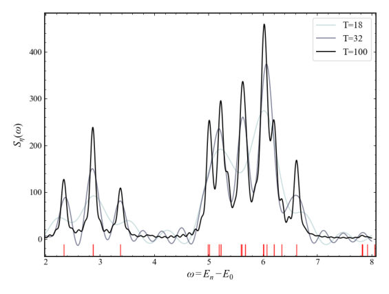
<figcaption class="paper-figure-caption"><b>Fig 4.</b> FIG. 4: The convergence of the discrete Fourier transform method from Eq. 13 for L = 4. We use an exponential damping factor of η = 0.05, as defined in Eq. 12. We picked this value of η to just barely smooth out the ringing artifacts of the T = 100 curves. The red ticks indicate the exact energy levels. Even at T = 100 several peaks are not resolved.</figcaption>
</figure>
<figure class="paper-figure-card">
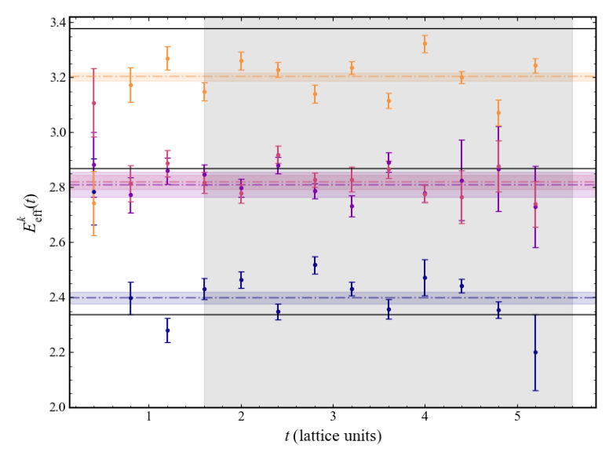
<figcaption class="paper-figure-caption"><b>Fig 5.</b> FIG. 5: Result of run on IonQ’s Forte Enterprise quantum computer using the smallest (set 1) of operators, L = 4, T = 5.6 and Trotter step ∆t = 0.4. Error bars reflect only the statistical errors from the finite number of shots (2048) and the bands show the 1 Σ uncertainty error in the fit to a constant. The exact energy levels are solid black lines. We can resolve the different energy levels and see the expected degeneracy.</figcaption>
</figure>
</div>

<p><strong>Summary.</strong> The paper presents a novel technique utilizing the Generalized Eigenvalue Problem (GEVP) to extract energy spectra from real-time correlators measured on quantum computers. By applying this method to the fuzzy $\sigma$-model, the authors demonstrate that GEVP is highly efficient and accurate for determining low-lying energy levels compared to alternative spectral determination methods. This work advances quantum simulation capabilities for complex many-body physics.</p>
<p><strong>Why it may be interesting.</strong> This work directly addresses spectroscopy in strongly correlated systems using near-term quantum hardware, providing a pathway to study dynamics where traditional Euclidean lattice field theory faces the sign problem.</p>
<details>
<summary>Detailed structure</summary>
<p><strong>Main problem.</strong> The core problem is extracting the energy spectrum (eigenvalues) of a quantum system's Hamiltonian, which is crucial for determining physical properties like masses or binding energies.</p>
<p><strong>Main result.</strong> The proposed Generalized Eigenvalue Problem (GEVP) method successfully resolves low-lying energy levels in agreement with exact diagonalization and proves substantially more efficient than Fourier transform methods on quantum hardware.</p>
<p><strong>Method.</strong> The authors adapt the GEVP, traditionally used for Euclidean correlators, to extract real-time energy eigenvalues directly from time evolution correlators measured on quantum computers.</p>
<p><strong>Model / system.</strong> The method is tested using the fuzzy $\sigma$-model, which discretizes the $1+1$ dimensional O(3) $\sigma$-model and is implemented on a lattice structure simulated via quantum hardware (IonQ Forte-Enterprise).</p>
<p><strong>Key observables.</strong> Energy eigenvalues ($E$), real-time correlators ($C_{ij}(t)$), and the comparison between GEVP results and exact diagonalization.</p>
<p><strong>Important parameters / regimes.</strong> Lattice size ($L=4$ or $L=8$), time extent ($T_{\max}$), Trotter step ($\Delta t$), and coupling constants ($g$).</p>
<p><strong>Assumptions / limitations.</strong> The method assumes that the approximation of perfect operators with a finite set is sufficient, and it is advantageous in NISQ regimes where long time extents are limited.</p>
<p><strong>Figures summary.</strong> Figures compare GEVP extraction results against exact solutions for small lattices ($L=4$), showing agreement within error bars; one figure compares GEVP vs. Fourier transform methods regarding required time extent.</p>
<p><strong>Paper structure.</strong> The paper introduces the physical problem (Hamiltonian spectrum), details the proposed quantum measurement protocol using GEVP on real-time correlators, validates it by comparing results against exact diagonalization for a specific model (fuzzy $\sigma$-model), and discusses its advantages over classical/alternative methods.</p>
</details>
<details>
<summary>Abstract</summary>
<p>Quantum computers can generate real-time correlators of field theories. By adapting the generalized eigenvalue problem to these correlators, energy eigenvalues can be extracted directly. The method is tested using both classical simulations and quantum hardware, successfully resolving several low-lying energy levels in agreement with exact diagonalization. Comparison with an alternative spectrum determination based on the Fourier transform of correlators shows that the proposed approach is substantially more efficient.</p>
</details>
<p><sub><a href="#top">↑ back to top</a></sub></p>

<p><a id="paper-2608.07912"></a></p>
<h3 id="quantum-tribology-acceleration-induced-stokes-friction-and-magnus-force-in-correlated-bose-fluids"><a href="http://arxiv.org/abs/2608.07912v1">Quantum tribology: acceleration-induced Stokes friction and Magnus force in correlated Bose fluids</a></h3>
<p><strong>Authors:</strong> V. M. Kovalev, A. N. Osipov, I. G. Savenko<br>
<strong>Type:</strong> theory · <strong>Category:</strong> quantum gases · <strong>PDF:</strong> <a href="https://arxiv.org/pdf/2608.07912v1">https://arxiv.org/pdf/2608.07912v1</a><br>
<strong>Analysis basis:</strong> full PDF text, analyzed in chunks
<strong>Topic relevance:</strong> 🔥 <code>analog quantum simulation</code> <strong>4/5</strong> · <code>correlated / nonlocal dissipation</code> <strong>2/5</strong> · <code>Frenkel-Kontorova</code> <strong>1/5</strong> · <code>Keldysh / 2PI / non-Gaussian methods</code> <strong>1/5</strong> · <code>methods for driven-dissipative</code> <strong>1/5</strong></p>
<div class="figure-strip-hint">↔ Scroll figures horizontally</div>
<div class="paper-figures-scroll">
<figure class="paper-figure-card">
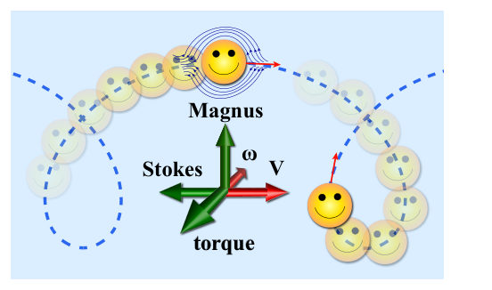
<figcaption class="paper-figure-caption"><b>Fig 1.</b> FIG. 1. System schematic: an impurity particle undergoes composite translational and orbital motion within a two- dimensional Bose-Einstein condensate. This dynamics gives rise to both longitudinal (Stokes) and transverse (Magnus) forces, alongside a back-action friction torque exerted by the condensate on the moving impurity.</figcaption>
</figure>
<figure class="paper-figure-card">
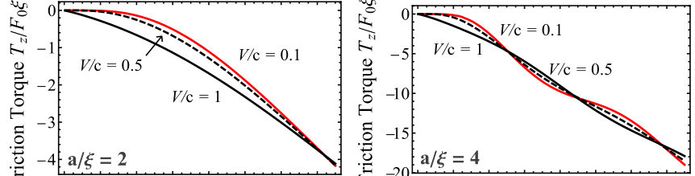
<figcaption class="paper-figure-caption"><b>Fig 2.</b> FIG. 2. Behavior of the Stokes friction force and torque: generalization of the Landau criterion to non-inertial motion. (a) Normalized friction force FS/F0 and (b) torque Tz/F0ξ as functions of the dimensionless impurity velocity V/c for different ratios of the rotation amplitude to the healing length: a/ξ = 4 (red solid), 0.5 (black dashed), and 2 (black solid). The latter corresponds to ωa ≪c, where the rotation is small, and the Landau criterion V &gt; c for the friction force is largely satisfied. Vertical dashed lines indicate the critical resonant velocity thresholds corresponding to the angular harmonics n = 0, 1, 2, 3. The corresponding critical velocities are Vc = c, Vc ≈1.58c, Vc...</figcaption>
</figure>
<figure class="paper-figure-card">
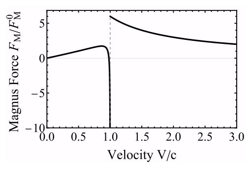
<figcaption class="paper-figure-caption"><b>Fig 3.</b> FIG. 3. Normalized anomalous transverse force FM/F 0 M as a function of dimensionless translational velocity V/c. Here, F 0 M = U 3 0 πa2k10 0 nc/(96m2cω3).</figcaption>
</figure>
<figure class="paper-figure-card">
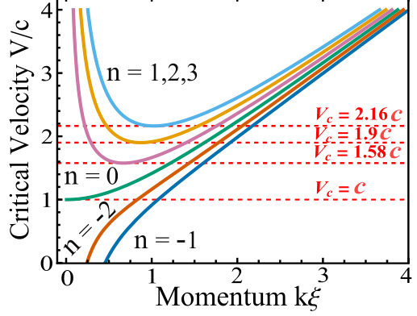
<figcaption class="paper-figure-caption"><b>Fig 4.</b> FIG. 1. Normalized critical resonant velocity V/c as a function of momentum k for various angular harmonics n given by Eq. (9). Solid curves represent the kinematic resonance conditions for the excitation of specific modes (n = −2, −1, 0, 1, 2, 3). Horizontal red dashed lines indicate the absolute minimum velocity thresholds Vc required to trigger the n ≥0 harmonics. These resonance thresholds correspond to Vc = c, Vc ≈1.58c, Vc ≈1.9c, and Vc ≈2.16c. The curves are evaluated for the fixed parameters a/ξ = 2 and ωξ/c = 0.25, same as for Fig. 2 from the main text.</figcaption>
</figure>
<figure class="paper-figure-card">

<figcaption class="paper-figure-caption"><b>Fig 5.</b> FIG. 2. (a, c) Normalized Stoke’s friction force FS/F0, and (b, d) torque Tz/F0ξ as functions of the dimensionless velocity V/c. The panels are grouped by the ratio of the healing length and the rotation amplitude, with the upper panels (a, b) evaluated at a/ξ = 2 and the lower panels (c, d) evaluated at a/ξ = 4. The solid curves correspond to different normalized rotation frequencies ωξ/c, which are indicated in the figure. The force normalization constant is F0 = ncU 2 0 /mc2ξ3.</figcaption>
</figure>
</div>

<p><strong>Summary.</strong> This paper develops a comprehensive theory for quantum tribology in Bose fluids subjected to acceleration. It shows that centripetal acceleration modifies the expected drag force, allowing dissipation below classical thresholds. Furthermore, it predicts a unique, non-dissipative transverse Magnus-like force arising from the fluid's nonlinearity and trajectory asymmetry.</p>
<p><strong>Why it may be interesting.</strong> This work directly connects concepts of non-inertial dynamics (acceleration) with many-body quantum phenomena (quantum friction and topological response), providing testable predictions for ultracold atomic systems.</p>
<details>
<summary>Detailed structure</summary>
<p><strong>Main problem.</strong> The study establishes a theoretical framework for quantum tribology, investigating how non-inertial (accelerated) motion modifies the principles of quantum friction in Bose fluids.</p>
<p><strong>Main result.</strong> The work predicts finite drag forces even below the classical Landau critical velocity due to acceleration, and reveals a novel, non-dissipative anomalous transverse force analogous to the Magnus effect.</p>
<p><strong>Method.</strong> The analysis employs linear and quadratic response theory applied to the Gross-Pitaevskii equation (GPE) to calculate density perturbations and associated forces.</p>
<p><strong>Model / system.</strong> The system modeled is a weakly interacting Bose condensate, treated as a quantum fluid. The dynamics are governed by the nonlinear GPE, considering an impurity particle undergoing composite translation and rotation.</p>
<p><strong>Key observables.</strong> Longitudinal Stokes Friction force (F_S), induced torque (T), and anomalous transverse Magnus-like force (F_M).</p>
<p><strong>Important parameters / regimes.</strong> Subsonic vs. supersonic regimes; rotational frequency ($\omega$) and translational velocity ($V$); the ratio of particle speed to sound speed ($V/c$).</p>
<p><strong>Assumptions / limitations.</strong> The analysis relies on linear response theory for first-order density corrections, though higher-order terms are used to derive F_M.</p>
<p><strong>Figures summary.</strong> Figures illustrate normalized friction force and torque vs. V/c showing resonant thresholds; another figure shows the anomalous transverse force (F_M) dependence on V/c, highlighting a jump at V/c=1.</p>
<p><strong>Paper structure.</strong> The paper develops the theory by first addressing linear response for drag forces, then incorporating higher-order nonlinearities to derive the non-dissipative anomalous transverse force. The structure moves from general principles to specific mathematical derivations in different regimes.</p>
</details>
<details>
<summary>Abstract</summary>
<p>The Landau criterion, a cornerstone of quantum fluid dynamics, dictates that dissipation is forbidden for uniform motion below a critical velocity. Yet, the fundamental question of how acceleration reshapes the principles of quantum friction has remained open since Landau and Pitaevskii's seminal works. Here, we establish a theoretical framework for the quantum tribology of non-inertial motion, describing a probe particle undergoing composite translation and rotation within a weakly interacting Bose condensate. Using the nonlinear Gross-Pitaevskii equation, we show that centripetal acceleration fundamentally modifies the energy-momentum constraints on elementary excitations. This leads to a finite drag force in the subsonic regime of the probe particle motion, and a characteristic quantum stick-slip behaviour in the deeply supersonic regime -- a direct generalization of the classical Landau-Pitaevskii picture. Beyond this dissipative response, we uncover a fundamentally distinct mechanism: the nonlinearity of the quantum fluid, combined with the broken symmetry of the trajectory, gives rise to a non-dissipative anomalous transverse force. This quantum Magnus-like response, emerging from the second-order density perturbation, performs no work and is rooted in the geometric asymmetry of the dynamically induced flow. Our findings lay the foundation for a universal program in quantum tribology of accelerated motion, establishing a direct and experimentally testable connection among non-inertial dynamics, nonlinear response, and topological symmetry breaking across platforms ranging from ultracold atoms and exciton-polariton condensates to cosmological analog systems.</p>
</details>
<p><sub><a href="#top">↑ back to top</a></sub></p>

<p><a id="paper-2608.07939"></a></p>
<h3 id="stable-three-dimensional-solitons-in-spin-orbit-coupled-atomic-molecular-condensates"><a href="http://arxiv.org/abs/2608.07939v1">Stable three-dimensional solitons in spin-orbit-coupled atomic-molecular condensates</a></h3>
<p><strong>Authors:</strong> Chao Kong, Jinqing Li, Guihua Chen, Guilong Li, Zhaopin Chen, Haiming Deng, Boris A. Malomed, Yongyao Li<br>
<strong>Type:</strong> theory · <strong>Category:</strong> quantum gases · <strong>PDF:</strong> <a href="https://arxiv.org/pdf/2608.07939v1">https://arxiv.org/pdf/2608.07939v1</a><br>
<strong>Analysis basis:</strong> full PDF text, analyzed in chunks
<strong>Topic relevance:</strong> 🔥 <code>analog quantum simulation</code> <strong>4/5</strong> · <code>Keldysh / 2PI / non-Gaussian methods</code> <strong>2/5</strong> · <code>driven-dissipative phase transition</code> <strong>1/5</strong> · <code>methods for driven-dissipative</code> <strong>1/5</strong></p>
<div class="figure-strip-hint">↔ Scroll figures horizontally</div>
<div class="paper-figures-scroll">
<figure class="paper-figure-card">

<figcaption class="paper-figure-caption"><b>Fig 1.</b> FIG. 1: A stable semi-vortex (SV) soliton with parameters (N, α) = (200, 0). Panels (a1), (b1), and (c1) display, sev- erally, the isosurface plot of the 3D density |φ1(x, y, z)|2, 2D density distribution |φ1(x, y)|2 in the z = 0 plane, and the cor- responding phase pattern. Panels (a2), (b2), (c2) and (a3), (b3), (c3) display, repsectively, the same for components φ2 and ψ. The angular momentum of this mode is Mz = 66.2.</figcaption>
</figure>
<figure class="paper-figure-card">

<figcaption class="paper-figure-caption"><b>Fig 2.</b> FIG. 2: A stable soliton of the MM type for (N, α) = (100, 0) and Mz = 0. The meaning of panels is the same as in Fig. 1.</figcaption>
</figure>
<figure class="paper-figure-card">

<figcaption class="paper-figure-caption"><b>Fig 3.</b> FIG. 4: The dependence of the soliton chemical potential µ, energy E and angular momentum Mz on the particle number N [panels (a1-c1), with α = 0], and on detuning α [panels (a2- c2), with N = 200]. The solid and dashed curves represent the 3D SV and MM solitons, respectively. The solitons do not exists above the critical value of the detuning, α &gt; αc.</figcaption>
</figure>
</div>

<p><strong>Summary.</strong> This paper theoretically investigates stable three-dimensional soliton formation in spin-orbit-coupled atomic-molecular Bose-Einstein condensates. By modeling the system with coupled mean-field equations and analyzing specific mixed-mode and semi-vortex configurations, the authors demonstrate that SOC coupling stabilizes these structures. This work is significant because it provides a robust mechanism for realizing stable vortex solitons using quadratic nonlinearity in quantum gas systems.</p>
<p><strong>Why it may be interesting.</strong> This work is highly relevant as it extends the study of nonlinear wave phenomena into the realm of ultracold atomic gases. The stabilization mechanism provided by SOC coupling for 3D solitons, especially achieving a large vortex norm share, offers new theoretical pathways for controlling complex quantum matter waves.</p>
<details>
<summary>Detailed structure</summary>
<p><strong>Main problem.</strong> The research aims to elucidate a mechanism for creating stable three-dimensional (3D) solitons within spin-orbit-coupled (SOC) atomic-molecular Bose-Einstein condensates (BECs).</p>
<p><strong>Main result.</strong> Stable 3D solitons, specifically Semi-Vortex (SV) and Mixed-Mode (MM) types, are demonstrated to exist in this SOC scheme, providing a method for realizing stable vortex solitons with quadratic nonlinearity.</p>
<p><strong>Method.</strong> The analysis uses the imaginary-time integration method on coupled Gross-Pitaevskii equations (GPEs), employing approximations like the cascading-limit approximation for strong detuning.</p>
<p><strong>Model / system.</strong> The system models an atomic-molecular BEC governed by mean-field equations incorporating quadratic three-wave interactions and SOC applied to the atomic components. The dynamics are described by coupled GPEs for the atomic ($\varphi_1, \varphi_2$) and molecular ($\psi$) fields.</p>
<p><strong>Key observables.</strong> Topological charge (unit circulation in $\varphi_2$), vortex norm share ($F_v > 50\%$ of total norm), chemical potential ($\mu$), Energy ($E$), and Angular Momentum ($M_z$).</p>
<p><strong>Important parameters / regimes.</strong> The control parameters are the particle number ($N$) and the mismatch parameter ($\alpha$); stability is mapped in the $(N, \alpha)$ plane.</p>
<p><strong>Assumptions / limitations.</strong> Key assumptions include applying planar (effectively 2D) SOC to the atomic component and utilizing the cascading-limit approximation for strong detuning.</p>
<p><strong>Figures summary.</strong> Figures illustrate stable soliton structures (SV and MM) via density isosurfaces, map out stability regions in the $(N, \alpha)$ plane, and plot conserved quantities like $\mu, E,$ and $M_z$ versus particle number or detuning.</p>
<p><strong>Paper structure.</strong> The paper establishes the governing coupled GPEs for the SOC-BEC. It then analyzes specific soliton ansätze (SV and MM) using numerical methods, mapping out their existence regions in parameter space and confirming stability through analysis of conserved quantities and vortex component dominance.</p>
</details>
<details>
<summary>Abstract</summary>
<p>We elaborate a mechanism for the creation of stable three-dimensional (3D) solitons in spin-orbit-coupled (SOC) atomic-molecular Bose-Einstein condensate, modeled by the mean-field equations with the quadratic three-wave interaction, characterized by mismatch $α$. The planar (effectively two-dimensional) SOC is applied to the soliton's atomic component, structuring it as a mixed mode (MM) or semi-vortex (SV). The molecular component of the SV soliton is shaped as a 3D vortex, while the molecular component in the MM soliton is an MM too. The solitons exist up to a critical value of $α$. The system demonstrates a relatively large norm share of the vortex components, exceeding $50\%$ of the total norm, which is an essential feature of SOC-supported solitons. This is scheme for realizing stable vortex solitons in free space with the quadratic nonlinearity.</p>
</details>
<p><sub><a href="#top">↑ back to top</a></sub></p>

<p><a id="paper-2608.08121"></a></p>
<h3 id="bose-einstein-condensates-with-raman-induced-spin-orbit-coupling-an-overview"><a href="http://arxiv.org/abs/2608.08121v1">Bose-Einstein condensates with Raman-induced spin-orbit coupling : An overview</a></h3>
<p><strong>Authors:</strong> Giovanni Italo Martone<br>
<strong>Type:</strong> theory · <strong>Category:</strong> quantum gases · <strong>PDF:</strong> <a href="https://arxiv.org/pdf/2608.08121v1">https://arxiv.org/pdf/2608.08121v1</a><br>
<strong>Analysis basis:</strong> full PDF text, analyzed in chunks
<strong>Topic relevance:</strong> 🔥 <code>analog quantum simulation</code> <strong>4/5</strong> · <code>Keldysh / 2PI / non-Gaussian methods</code> <strong>1/5</strong> · <code>driven-dissipative phase transition</code> <strong>1/5</strong></p>
<div class="figure-strip-hint">↔ Scroll figures horizontally</div>
<div class="paper-figures-scroll">
<figure class="paper-figure-card">

<figcaption class="paper-figure-caption"><b>Fig 1.</b> Fig. 1: Lower and upper branch of the single-particle spec- trum (2) with δR = 0 as functions of momentum and for ℏΩR/ER = 1.0 (blue solid line), 4.0 (red dashed line) and 6.0 (yellow dash-dotted line). The black dotted line shows the dis- persion at zero Raman coupling ΩR.</figcaption>
</figure>
<figure class="paper-figure-card">

<figcaption class="paper-figure-caption"><b>Fig 2.</b> Fig. 2: Phase diagram of a spin-orbit-coupled Bose-Einstein condensate as a function of the average density ¯n and the Ra- man coupling ΩR. Solid (dashed) lines correspond to transi- tions of first (second) order. Adapted from [25].</figcaption>
</figure>
<figure class="paper-figure-card">

<figcaption class="paper-figure-caption"><b>Fig 3.</b> Fig. 3: Lower (blue) and upper (green) branch of the excitation spectrum on top of the PW phase with negative momentum. Notice the phonon and roton structures in the lower branch. Adapted from [25].</figcaption>
</figure>
<figure class="paper-figure-card">

<figcaption class="paper-figure-caption"><b>Fig 4.</b> Fig. 4: Lower-frequency part of the excitation spectrum in the stripe phase, revealing the phonon-like behavior exhibited by the two lowest bands at small qx. Adapted from [38] under the terms of the Creative Commons Attribution 4.0 International License.</figcaption>
</figure>
</div>

<p><strong>Summary.</strong> This review surveys Bose-Einstein condensates with Raman-induced spin-orbit coupling, detailing how SOC modifies the system's equilibrium states. The work identifies three key phases—Stripe, Plane-Wave, and Single-Minimum—and outlines the phase transitions between them using mean-field theory. It is crucial for understanding superfluidity in spinor quantum gases.</p>
<p><strong>Why it may be interesting.</strong> It provides a comprehensive overview of how engineered spin-orbit coupling fundamentally alters the ground state structure (supersolid stripe phase) and dynamic excitations of BECs, which is central to modern AMO physics research.</p>
<details>
<summary>Detailed structure</summary>
<p><strong>Main problem.</strong> Reviewing the advances and future research directions concerning Bose-Einstein condensates (BECs) subjected to Raman-induced spin-orbit coupling (SOC).</p>
<p><strong>Main result.</strong> The system exhibits distinct quantum phases—Stripe, Plane-Wave (PW), and Single-Minimum (SM)—whose transitions are controlled by tuning parameters like the Raman coupling strength ($\Omega_R$).</p>
<p><strong>Method.</strong> Theoretical analysis using the Gross-Pitaevskii mean-field approach to minimize the total energy functional.</p>
<p><strong>Model / system.</strong> The system is a BEC of ultra-cold atoms (e.g., $^{87}	ext{Rb}$) described by an effective spin-1/2 Hamiltonian incorporating SOC induced by Raman lasers. The dynamics are governed by a modified Gross-Pitaevskii equation.</p>
<p><strong>Key observables.</strong> Density modulations (stripes), superfluid density ($
ho_s$), magnetic susceptibility ($\chi_M$), and the excitation spectrum (Bogoliubov modes).</p>
<p><strong>Important parameters / regimes.</strong> Raman coupling strength ($\Omega_R$), interaction strengths ($g_{dd}, g_{ss}$), and average density ($ar{n}$).</p>
<p><strong>Assumptions / limitations.</strong> The analysis often assumes equal intraspecies couplings ($g_{ds}=0$) and vanishing detuning ($\delta_R=0$). The system is treated in the mean-field limit.</p>
<p><strong>Figures summary.</strong> Figures illustrate the single-particle spectrum, showing double-minimum structures, and depict the phase diagram mapping out the Stripe (I), Plane-Wave (II), and Single-Minimum (III) phases.</p>
<p><strong>Paper structure.</strong> The paper reviews the theoretical framework starting from the single-particle Hamiltonian, derives the many-body mean-field energy functional, analyzes the resulting three distinct quantum phases based on parameter tuning, and discusses diagnostic tools like excitation spectra and susceptibility divergence.</p>
</details>
<details>
<summary>Abstract</summary>
<p>Since their first realization more than a decade ago spin-orbit-coupled Bose-Einstein condensates have been the subject of intense theoretical and experimental investigations. Spin-orbit coupling deeply modifies the equilibrium properties of the condensate, giving rise to novel configurations such as a supersolid stripe phase and a phase-separated plane-wave state. At the level of dynamics, both the frequency and the nature of the collective modes are significantly affected by the coupling with the spin degree of freedom. Here we review some of the most relevant advances in the field and provide our perspective on possible future research directions.</p>
</details>
<p><sub><a href="#top">↑ back to top</a></sub></p>

<p><a id="paper-2608.09076"></a></p>
<h3 id="knot-your-average-qutrit-measurement-induced-entanglement-splitting-and-the-cabling-dictionary-for-ghz-and-w-states"><a href="http://arxiv.org/abs/2608.09076v1">Knot your average qutrit: Measurement-induced entanglement splitting and the cabling dictionary for GHZ and W States</a></h3>
<p><strong>Authors:</strong> Sougata Bhattacharyya, Sovik Roy<br>
<strong>Type:</strong> theory · <strong>Category:</strong> quantum information and computing · <strong>PDF:</strong> <a href="https://arxiv.org/pdf/2608.09076v1">https://arxiv.org/pdf/2608.09076v1</a><br>
<strong>Analysis basis:</strong> full PDF text, analyzed in chunks
<strong>Topic relevance:</strong> 🔥 <code>quantum measurements</code> <strong>4/5</strong> · <code>Full counting statistics</code> <strong>1/5</strong> · <code>correlated / nonlocal dissipation</code> <strong>1/5</strong></p>
<div class="figure-strip-hint">↔ Scroll figures horizontally</div>
<div class="paper-figures-scroll">
<figure class="paper-figure-card">

<figcaption class="paper-figure-caption"><b>Fig 1.</b> Figure 1: The two qubit-level link types behind Aravind’s correspondence. (a) The Borromean Rings: no two rings are linked on their own, but cutting any one still frees the other two completely. (b) The 3-Hopf Ring: each ring is linked to its neighbor, so cutting one ring still leaves the other two linked to each other.</figcaption>
</figure>
<figure class="paper-figure-card">

<figcaption class="paper-figure-caption"><b>Fig 2.</b> Figure 2: Each ring from Figure 1 is now drawn as a cable of n = d −1 = 2 parallel strands, one extra strand for the one extra level a qutrit has over a qubit. How many of these strands stay linked after a measurement cut is what tells the link types apart at the qutrit level.</figcaption>
</figure>
<figure class="paper-figure-card">

<figcaption class="paper-figure-caption"><b>Fig 3.</b> Figure 3: The R = 2 case: one strand of the cable stays linked between the two remaining rings, while the other is cut and plays no further part. Only one of the two strands is doing any topological work here, exactly what partial cabling means.</figcaption>
</figure>
<figure class="paper-figure-card">

<figcaption class="paper-figure-caption"><b>Fig 4.</b> Figure 4: How Fig. 3 actually comes about: starting from the fully cabled tangle, one strand after another loosens and fades out, until only a single strand is left holding each pair of rings together. The rings are still genuinely linked one connecting strand is enough for that but now only one strand is doing the work, with its former partner hanging loose. This is the R = 2, partial-cabling case, shown as it is built rather than as a finished picture.</figcaption>
</figure>
<figure class="paper-figure-card">

<figcaption class="paper-figure-caption"><b>Fig 5.</b> Figure 5: The full dictionary in one picture: the number of strands still linked between the two remaining rings exactly matches the Schmidt rank R left behind after measurement, fully separated for R = 1, one strand linked for R = 2, both strands linked for R = 3.</figcaption>
</figure>
</div>

<p><strong>Summary.</strong> This theoretical paper analyzes how multipartite entanglement in qutrit systems splits after single-particle measurements, extending topological concepts from qubits. The authors find that the structural classification must shift from GHZ vs. W to a repeated-index versus all-different-index structure. They demonstrate this by calculating Schmidt ranks under CB and MUBs, showing robust behavior for certain states.</p>
<p><strong>Why it may be interesting.</strong> This work provides a rigorous mathematical framework for understanding how entanglement robustness changes with increasing local dimension ($d>2$), offering insights into multipartite correlations beyond simple qubit models relevant to quantum communication protocols.</p>
<details>
<summary>Detailed structure</summary>
<p><strong>Main problem.</strong> The study aims to extend the topological characterization of multipartite entanglement, traditionally classified by GHZ vs. W states for qubits, to qutrits ($d=3$). It specifically investigates how this entanglement structure changes after a single-particle measurement.</p>
<p><strong>Main result.</strong> The relevant structural classification for qutrit entanglement splitting is not GHZ versus W class, but rather the distinction between repeated-index and all-different-index bag structures. Furthermore, measuring the maximally entangled $|	ext{W}\{0,1,2\}
angle$ state in an MUB forces the residual pair into a state of maximum Schmidt rank ($R=3$).</p>
<p><strong>Method.</strong> The authors extend Aravind's topological correspondence using a 'two-strand cabling extension' to model entanglement splitting. They calculate exact eigenvalues and Schmidt ranks by analyzing the reduced density matrix after measurement in both Computational Basis (CB) and Mutually Unbiased Bases (MUBs).</p>
<p><strong>Model / system.</strong> The system involves tripartite quantum states realized using qutrits ($\{0, 1, 2\}$ basis), focusing on GHZ-type and W-class states. The analysis is performed in the context of entanglement splitting under projective measurements.</p>
<p><strong>Key observables.</strong> Residual Schmidt Rank ($R$), which can take values $\{1, 2, 3\}$; measurement probabilities $p(A)$; eigenvalues $\{\lambda_i\}$ of the reduced density matrix $
ho_{BC}$.</p>
<p><strong>Important parameters / regimes.</strong> The dimension $d=3$ (qutrits); the structure of the bases used for measurement (CB vs. MUBs).</p>
<p><strong>Assumptions / limitations.</strong> The 'two-strand cabling dictionary' is explicitly treated as a labeling convention constructed to reproduce the independently computed Schmidt rank, rather than being derived purely from topological link invariants.</p>
<p><strong>Figures summary.</strong> References are made to tables summarizing entanglement splitting patterns for various W-state families under CB and MUB measurements, showing distinct ranks based on state structure.</p>
<p><strong>Paper structure.</strong> The paper first establishes the need to generalize Aravind's model from qubits to qutrits using a cabling extension. It then analyzes $    ext{|GHZ}_3
angle$ and various W-states under CB and MUB measurements, culminating in the structural finding that index structure (repeated vs. all-different) is the key discriminator.</p>
</details>
<details>
<summary>Abstract</summary>
<p>Multipartite entanglement is conventionally classified by state families viz. family of GHZ and W class of states, with each family expected to behave differently under measurement. We show that, at least for the question of how entanglement splits after a single-particle measurement, this is not the division that matters for qutrits. Extending the Aravind's correspondence (which models entanglement as topological linking, and projective measurement as physically cutting a ring from an interlinked configuration\cite{aravind1997}) from qubits to qutrits, we derive the complete measurement-induced entanglement splitting of the GHZ type qutrit state i.e |GHZ_3&gt; and of the full family of symmetric W class qutrit states, six two same - one different states i.e |{W_{p,p,q}^{sym}}&gt; and one all - different state i.e. |W_{0,1,2}&gt;, under both the computational basis (CB) and the mutually unbiased bases (MUBs), obtaining exact eigenvalues and Schmidt ranks for every outcome in every case. We see that the |W_{0,1,2}&gt; state behaves similarly as |GHZ_3&gt; state, a single, outcome-independent residual rank in each basis, while the |{W_{p,p,q}^{sym}&gt; states alone show probability-weighted, outcome-dependent behaviour. The relevant structural line is therefore repeated-index versus all-different-index bag structure, not GHZ class versus $W$ class. We express this classification using a \textit{two-strand cabling} extension of Aravind's \textit{ring-and-link} picture. This is needed because the qutrit residual Schmidt rank (R) takes three values, R belonging to {1,2,3}, rather than the qubit binary (i.e. R belonging to {1,2}). We are explicit throughout that this cabling dictionary is a labeling convention built to reproduce an independently computed Schmidt rank, not a topological invariant derived from the link diagrams themselves, and we discuss what would be needed to close that gap</p>
</details>
<p><sub><a href="#top">↑ back to top</a></sub></p>

<p><a id="paper-2608.08587"></a></p>
<h3 id="elementary-magnons-and-interacting-multi-magnon-quasiparticles-in-the-effective-spin-math336math-kagome-staircase-magnet-comath337mathvmath338mathomath339math"><a href="http://arxiv.org/abs/2608.08587v1">Elementary magnons and interacting multi-magnon quasiparticles in the effective spin-$\frac{1}{2}$ kagome-staircase magnet Co$_{3}$V$_{2}$O$_{8}$</a></h3>
<p><strong>Authors:</strong> Yuan Xiao, Jiajun Mo, Zhenmeng Jiang, Haoyang Leng, Otkur Omar, Yanjun Li, Fengyi Song, Jianjun Ying, Shang Gao<br>
<strong>Type:</strong> both · <strong>Category:</strong> strongly correlated electrons · <strong>PDF:</strong> <a href="https://arxiv.org/pdf/2608.08587v1">https://arxiv.org/pdf/2608.08587v1</a><br>
<strong>Analysis basis:</strong> full PDF text, analyzed in chunks
<strong>Topic relevance:</strong> 🔥 <code>analog quantum simulation</code> <strong>4/5</strong> · <code>Keldysh / 2PI / non-Gaussian methods</code> <strong>1/5</strong></p>
<div class="figure-strip-hint">↔ Scroll figures horizontally</div>
<div class="paper-figures-scroll">
<figure class="paper-figure-card">

<figcaption class="paper-figure-caption"><b>Fig 1.</b> FIG. 1. (a) The kagome staircase lattice formed by the Co2+ ions in CVO, where the cross-tie and spine sites are shown in blue and red, respectively. The exchange paths for the couplings considered in our modeling are indicated. (b) The TDTS experimental setup in the Voigt geometry and Faraday geometry. WGP represents the wire-grid polarizer. (c) Representative zero-field time-domain terahertz signals measured at 1.5 K in the FM state (blue) and 15 K in the PM state (red). (d) Phase diagram of Co3V2O8 for H ∥a, adapted from Ref. [24], where FM, PM, and SDW represent the ferromagnetic, paramagnetic, and spin density wave, respectively. The transition points between the FM and SDW phases as...</figcaption>
</figure>
<figure class="paper-figure-card">

<figcaption class="paper-figure-caption"><b>Fig 2.</b> FIG. 2. (a) Temperature dependence of the terahertz spectra measured with the polarization configuration of h ∥a, e ∥c in zero field. A clear transition form the ferromagnetic phase to the SDW phase is observed near 6 K, followed by the gradual diminishing of the magnetic signal at higher temperatures. Inset schematically depicts the contrasting evolution of the high and low energy excitations at the Γ point as δ increases from 1</figcaption>
</figure>
<figure class="paper-figure-card">

<figcaption class="paper-figure-caption"><b>Fig 3.</b> FIG. 3. (a) Time-domain signals for the h ∥c, e ∥b con- figuration measured in a field of 7 T. (b) The corresponding frequency-domain spectra obtained after applying time win- dows of 15 and 25 ps. (c,d) Similar time- and frequency- domain spectra for the h ∥c, e ∥a configuration measured in a field of 7 T.</figcaption>
</figure>
<figure class="paper-figure-card">

<figcaption class="paper-figure-caption"><b>Fig 4.</b> FIG. 4. (a-d) Calculated inelastic neutron-scattering spec- tra along the (a) [0 K 0], (b) [1 K 0], (c) [H 1.5 0], and (d) [0 0 L] reciprocal-space cuts based on the fitted effec- tive spin-1/2 exchange model. The calculated spectra were convolved by a Gaussian function with full-width-at-half- maximum (FHWM) indicated in each panel.</figcaption>
</figure>
<figure class="paper-figure-card">

<figcaption class="paper-figure-caption"><b>Fig 5.</b> FIG. 5. (a-c) Calculated field-dependent magnetic-dipole absorption coefficients (a) αxx m , (b) αyy m , and (c) αzz m for THz magnetic fields oriented along the a, b, and c axes, respectively. For better visibility of the weak magnon excitations, the intensity is plotted on a logarithmic scale. Multi-magnon continua are indicated in each panel.</figcaption>
</figure>
</div>

<p><strong>Summary.</strong> This paper investigates the magnetic excitations in Co3V2O8 using terahertz spectroscopy. By fitting low-energy one-magnon modes to an effective spin-1/2 Hamiltonian derived from combined experimental data, the authors successfully identify higher-energy features as interacting multi-magnon quasiparticles. This work demonstrates how strong exchange anisotropy stabilizes these complex excitations beyond simple non-interacting models.</p>
<p><strong>Why it may be interesting.</strong> The work provides a detailed experimental and theoretical framework for understanding collective excitations in frustrated magnets, which is highly relevant to modeling strongly correlated quantum materials where magnon interactions are key.</p>
<details>
<summary>Detailed structure</summary>
<p><strong>Main problem.</strong> The study aims to characterize the magnetic excitation spectrum of the kagome-staircase magnet Co3V2O8, specifically distinguishing between elementary one-magnon modes and interacting multi-magnon quasiparticles.</p>
<p><strong>Main result.</strong> High-energy excitations observed via terahertz spectroscopy are identified as sharp, interacting multi-magnon quasiparticles stabilized by strong exchange anisotropy, which cannot be explained by non-interacting models.</p>
<p><strong>Method.</strong> The research combines high-resolution time-domain terahertz spectroscopy (TDTS) measurements with theoretical modeling based on an effective spin-1/2 anisotropic-exchange Hamiltonian derived from fitting both TDTS and inelastic neutron scattering data.</p>
<p><strong>Model / system.</strong> The physical system is the three-dimensional kagome-staircase compound Co3V2O8. The analysis utilizes an effective spin-1/2 model with strong anisotropic exchange interactions to describe the magnetic excitations.</p>
<p><strong>Key observables.</strong> Polarization-resolved low-energy one-magnon modes, and high-energy sharp branches exhibiting field slopes two to four times those of single magnons, along with evidence of avoided crossings (hybridization).</p>
<p><strong>Important parameters / regimes.</strong> Temperature (T), external magnetic field (B), exchange coupling constants (J1, J3, J4, J6), and the effective spin-1/2 Hamiltonian parameters.</p>
<p><strong>Assumptions / limitations.</strong> The low-energy dynamics can be effectively described by a spin-1/2 model; the analysis combines zone-center TDTS data with momentum-dependent INS data for comprehensive fitting.</p>
<p><strong>Figures summary.</strong> Figures illustrate the lattice structure, experimental setups (TDTS), phase diagrams showing magnetic transitions (FM, SDW), and frequency spectra revealing both single-magnon and multi-magnon responses across varying fields and temperatures.</p>
<p><strong>Paper structure.</strong> The paper first establishes the material's magnetic phases and uses TDTS to map low-energy one-magnon modes. It then fits these data alongside INS results to determine an effective Hamiltonian. Finally, it analyzes high-energy features, identifying them as interacting multi-magnon quasiparticles through evidence of hybridization.</p>
</details>
<details>
<summary>Abstract</summary>
<p>The excitation spectrum of an anisotropic magnet provides a direct link between its microscopic Hamiltonian and interaction-driven quasiparticles. Here we use high-resolution time-domain terahertz spectroscopy to map the magnetic excitations of the three-dimensional kagome-staircase compound Co$_{3}$V$_{2}$O$_{8}$ as functions of temperature and magnetic field. At low energies, polarization-resolved spectra identify magnetic-dipole-active one-magnon modes and track their evolution across the ferromagnetic and spin-density-wave phases. Combining their field dependence with previously reported inelastic-neutron-scattering dispersions, we determine an effective spin-$\frac{1}{2}$ Hamiltonian with strongly anisotropic exchange that quantitatively reproduces the one-magnon spectrum. This model provides a noninteracting benchmark for the high-energy response, where we observe sharp branches with field slopes that are two to four times those of the one-magnon modes, together with anticrossings between branches of different magnon numbers. Their sharpness, polarization dependence, and departure from the calculated multi-magnon continua identify them as interacting multi-magnon quasiparticles that can be stabilized by strong exchange anisotropy.</p>
</details>
<p><sub><a href="#top">↑ back to top</a></sub></p>

<p><a id="paper-2608.08738"></a></p>
<h3 id="ground-state-phase-diagram-and-route-to-supersolidity-in-a-two-component-extended-bose-hubbard-model"><a href="http://arxiv.org/abs/2608.08738v1">Ground-state phase diagram and route to supersolidity in a two-component extended Bose-Hubbard model</a></h3>
<p><strong>Authors:</strong> Xuexin Qiu, Ning Bian, Yang Liu, Saisai He, Z. Y. Xie, Hong-Gang Luo, Jize Zhao<br>
<strong>Type:</strong> theory · <strong>Category:</strong> quantum gases · <strong>PDF:</strong> <a href="https://arxiv.org/pdf/2608.08738v1">https://arxiv.org/pdf/2608.08738v1</a><br>
<strong>Analysis basis:</strong> full PDF text, analyzed in chunks
<strong>Topic relevance:</strong> 🔥 <code>analog quantum simulation</code> <strong>4/5</strong> · <code>methods for driven-dissipative</code> <strong>1/5</strong></p>
<div class="figure-strip-hint">↔ Scroll figures horizontally</div>
<div class="paper-figures-scroll">
<figure class="paper-figure-card">

<figcaption class="paper-figure-caption"><b>Fig 1.</b> FIG. 1. Schematic illustration of the iPEPS ansatz used in this work. The circles denote local tensors on the square lattice. Blue and red indicate different sublattices, red legs denote physical indices, black legs denote virtual indices, and the green square highlights a 2 × 2 unit cell.</figcaption>
</figure>
<figure class="paper-figure-card">

<figcaption class="paper-figure-caption"><b>Fig 2.</b> FIG. 2. Ground-state phase diagram for the parameter set identified in the experiment [23], obtained by TN method with D = 4. Open circles denote the transition points with the error bar smaller than the symbol size; solid lines are guides to the eye.</figcaption>
</figure>
<figure class="paper-figure-card">

<figcaption class="paper-figure-caption"><b>Fig 3.</b> FIG. 3. Order parameters ψ1, ψ2, ρ1, ρ2, ∆1 and ∆2 for the experimental parameter set are plotted as functions of µ1 for (a) µ2 = 50 and (b) µ2 = 200. The discontinuities in the order parameters indicate the phase transitions are all first order. Data are obtained with D = 4.</figcaption>
</figure>
<figure class="paper-figure-card">

<figcaption class="paper-figure-caption"><b>Fig 4.</b> FIG. 4. Ground-state phase diagram after tuning the param- eter t2 = 35, obtained by TN method with D = 4. Open circles denote the transition points; solid lines are guides to the eye. The error bars are ±2 if not plotted explicitly.</figcaption>
</figure>
<figure class="paper-figure-card">

<figcaption class="paper-figure-caption"><b>Fig 5.</b> FIG. 6. 1/D dependence (D=3–8) of the order parameters at the representative point (µ1 = 120, µ2 = 50) in the CB-SS phase.</figcaption>
</figure>
</div>

<p><strong>Summary.</strong> The authors mapped the ground-state phase diagram for a two-component Bose-Hubbard model simulating dipolar excitons. They found that while the natural experimental regime suppresses supersolidity, by carefully enhancing the hopping of one component, they theoretically predicted and confirmed the emergence of a stable orbital-selective supersolid phase.</p>
<p><strong>Why it may be interesting.</strong> This work directly addresses the realization of exotic quantum phases like supersolidity in controllable platforms (dipolar excitons), providing concrete theoretical guidance on tuning parameters to achieve desired many-body states.</p>
<details>
<summary>Detailed structure</summary>
<p><strong>Main problem.</strong> The study investigates the ground-state phase diagram of a two-component extended Bose-Hubbard model to determine if a supersolid (SS) phase can be realized.</p>
<p><strong>Main result.</strong> In the original experimental regime, no SS phase was found due to strong interactions suppressing superfluidity; however, tuning hopping in one component revealed a robust orbital-selective supersolid (CB-SS) phase.</p>
<p><strong>Method.</strong> The ground-state properties were calculated using the infinite projected entangled-pair states (iPEPS) ansatz and analyzed with CTMRG methods.</p>
<p><strong>Model / system.</strong> The system is modeled by a two-component extended Bose-Hubbard Hamiltonian, motivated by dipolar excitons confined in an artificial square lattice.</p>
<p><strong>Key observables.</strong> Average density ($
ho_\alpha$), density-modulation order parameter ($\Delta_\alpha$), and condensate order parameter ($\psi_\alpha$).</p>
<p><strong>Important parameters / regimes.</strong> Hopping parameters ($t_1, t_2$) and on-site/interaction repulsion terms ($U, V$); the tuning of $t_2$ is crucial for observing SS.</p>
<p><strong>Assumptions / limitations.</strong> Components are treated as hard-core bosons due to large interaction strengths; calculations use iPEPS ansatz and finite unit-cell extrapolations.</p>
<p><strong>Figures summary.</strong> Figures show the phase diagram in both the original (no SS) and tuned (SS present) regimes, illustrating the evolution of order parameters across different phases like CB-VM and CB-SS.</p>
<p><strong>Paper structure.</strong> The paper first maps out the zero-temperature phase structure for the experimental parameters, establishing the absence of supersolidity. It then systematically tunes a hopping parameter to stabilize and confirm the existence of an orbital-selective supersolid phase using rigorous numerical checks.</p>
</details>
<details>
<summary>Abstract</summary>
<p>We investigate the ground-state phase diagram of a two-component extended Bose-Hubbard model recently realized with dipolar excitons, using the projected entangled-pair states. For the experimentally relevant parameter regime, checkerboard, Mott-insulating, superfluid, and vacuum phases are identified. These phases exhibit orbital-selective character, wherein the two components occupy different quantum states, but we find no evidence for a supersolid phase. The absence of supersolidity is attributed to the strongly interaction-dominated microscopic energy scales, which severely restrict the superfluid regime. Guided by the supersolid mechanism, we further explore a nearby parameter regime with enhanced hopping of one component and identify an orbital-selective supersolid phase. Further finite bond-dimension and unit-cell analyses establish the robustness of this phase. Our results clarify the zero-temperature phase structure of the dipolar-exciton platform and provide a possible route toward realizing supersolidity in this setting.</p>
</details>
<p><sub><a href="#top">↑ back to top</a></sub></p>

<p><a id="paper-2608.09215"></a></p>
<h3 id="a-heterogeneous-distributed-architecture-for-quantum-simulation"><a href="http://arxiv.org/abs/2608.09215v1">A Heterogeneous Distributed Architecture for Quantum Simulation</a></h3>
<p><strong>Authors:</strong> John Stack, Sitong Liu, Abhinav Anand, Inder Monga, Yuan Liu, Erhan Saglamyurek, Pedro L. S. Lopes, Frank Mueller, Katherine Klymko<br>
<strong>Type:</strong> theory · <strong>Category:</strong> quantum information and computing · <strong>PDF:</strong> <a href="https://arxiv.org/pdf/2608.09215v1">https://arxiv.org/pdf/2608.09215v1</a><br>
<strong>Analysis basis:</strong> full PDF text, analyzed in chunks
<strong>Topic relevance:</strong> 🔥 <code>analog quantum simulation</code> <strong>4/5</strong></p>
<div class="figure-strip-hint">↔ Scroll figures horizontally</div>
<div class="paper-figures-scroll">
<figure class="paper-figure-card">

<figcaption class="paper-figure-caption"><b>Fig 1.</b> Fig. 1: Simulation workflow, Pauli-string structure and device implementation. (a) Simulation workflow. (b) Co-support and incidence matrices for the Jordan–Wigner (JW, top) and Bravyi–Kitaev (BK, bottom) transformations on a 7 × 7 Fermi- Hubbard Hamiltonian. The co-support matrices indicate the probability that qubits i and j both occur in the support of a Pauli string. The incidence matrices indicate which qubits occur in the support of each Pauli string. (c) A method of computing parity that is suboptimal on distributed devices, requiring O(w) non-local CNOTs for a Pauli string of weight w. (d) A communication-efficient method of computing parity. For each lane on which a Pauli string...</figcaption>
</figure>
<figure class="paper-figure-card">

<figcaption class="paper-figure-caption"><b>Fig 2.</b> Fig. 2: Quantum architectures. Gradient coloring represents design space for sizing. (a) Monolithic device with column(s) of T factories (T), hot-storage zones (H), connected via ebits (E) to data (D) / cold storage qubits. (b-c) Distributed ho- mogeneous architectures. Yellow lines indicate node-to-node interactions required to implement distributed Pauli strings. Example internal homogeneous node structure shown. (d) Dis- tributed heterogeneous architecture. Yellow and cross-hatched yellow arrows at the Magic core indicate inter- and intra-string parallelism respectively. Note that while nodes are shown as squares or 1D rectangles, this is just illustrative. We model nodes as rectangles...</figcaption>
</figure>
<figure class="paper-figure-card">

<figcaption class="paper-figure-caption"><b>Fig 3.</b> Fig. 3: Wall-clock time against total T factory count Pareto plot. (a-b) 450-qubit simulations at 1ms O(d) Bell state generation rates. The data shown in these plots correspond to the Bravyi–Kitaev (BK) transformation.</figcaption>
</figure>
<figure class="paper-figure-card">

<figcaption class="paper-figure-caption"><b>Fig 4.</b> Fig. 4: Number of T factories, magic sites and distributed connections. (a) Total number of T factories across different distributed quantum computing architectures as problem size increases. (b) Total number of magic sites for each architec- ture. For the 1D and monolithic architectures, this remains fixed and is equal to the number of storage lanes. For the 2D architecture, it is equal to the number of modules and therefore increases with problem size. (c) Total number of distributed connections for different architectures against qubit count.</figcaption>
</figure>
<figure class="paper-figure-card">

<figcaption class="paper-figure-caption"><b>Fig 5.</b> Fig. 5: Performance of the architecture and its scaling against problem size. (a-b) The performance of the device on an L × L grid Fermi-Hubbard simulation task with N = 2L2</figcaption>
</figure>
</div>

<p><strong>Summary.</strong> The paper introduces a specialized, heterogeneous quantum computer architecture designed to efficiently simulate fermionic systems like the Fermi-Hubbard model. By separating computation into a magic core and dedicated cold storage lanes, it significantly reduces communication bottlenecks compared to uniform distributed designs. This makes simulating complex, non-local interactions on large qubit counts more feasible.</p>
<p><strong>Why it may be interesting.</strong> This work directly addresses the hardware bottleneck for simulating strongly correlated quantum matter by proposing a resource-aware architectural solution that minimizes communication overheads inherent in large-scale fault tolerance.</p>
<details>
<summary>Detailed structure</summary>
<p><strong>Main problem.</strong> The primary challenge is scaling fault-tolerant quantum computation for simulating complex physical systems while minimizing overheads associated with communication, routing, and resource duplication in distributed architectures.</p>
<p><strong>Main result.</strong> A novel heterogeneous distributed architecture, connecting a magic core to specialized cold-storage lanes, was shown to be significantly faster (up to 2x) than homogeneous alternatives for large-scale fermionic simulations.</p>
<p><strong>Method.</strong> The authors propose an architectural design that separates active computation from long-term storage and evaluates its performance using Trotterization applied to Pauli strings derived from fermionic Hamiltonians.</p>
<p><strong>Model / system.</strong> The work focuses on simulating quantum dynamics using the Fermi–Hubbard model and the sparse Sachdev–Ye–Kitaev (SYK) model, requiring mappings of fermionic operators to Pauli string representations via JW or BK transformations.</p>
<p><strong>Key observables.</strong> Wall-clock time comparison between heterogeneous vs. homogeneous architectures; scaling of Pauli string weight ($O(N)$ vs $O(\log N)$); and the efficiency gain factor ($\sim 2	imes$ speedup).</p>
<p><strong>Important parameters / regimes.</strong> System size up to 450 logical qubits; T-state factory count; lattice geometry (for Fermi-Hubbard); and target error rates for fault tolerance.</p>
<p><strong>Assumptions / limitations.</strong> The analysis assumes that the overheads in traditional distributed architectures are dominated by slow Bell pair communication, making architectural specialization crucial.</p>
<p><strong>Figures summary.</strong> Figures illustrate the simulation workflow, comparing co-support matrices for JW vs. BK encodings, and detailing the proposed heterogeneous architecture structure versus homogeneous alternatives.</p>
<p><strong>Paper structure.</strong> The paper introduces the problem of scaling fault tolerance, details the physical models (Fermi-Hubbard/SYK) and their Pauli string representations, proposes the novel heterogeneous architecture, and concludes with performance evaluations comparing it against existing distributed paradigms.</p>
</details>
<details>
<summary>Abstract</summary>
<p>Architectural specialization and distribution can help scale fault-tolerant quantum computers, but may also introduce substantial overheads from communication, routing, and resource duplication. We introduce a heterogeneous distributed architecture in which a magic core is connected to an extensible storage system composed of one-dimensional lanes of specialized cold-storage nodes. The storage system supports parallel random access to Pauli string parities. This organization is particularly well suited to fermionic quantum simulation, enabling parallel execution of the highly non-local Pauli strings arising from these systems. We evaluate the architecture on fault-tolerant simulations of the dynamics of the Fermi-Hubbard and sparse Sachdev-Ye-Kitaev (SYK) models on systems of up to 450 logical qubits. These workloads exhibit complementary communication structures: Fermi-Hubbard produces a spectrum of interactions from local to non-local shaped by lattice geometry, whereas sparse SYK produces highly non-local and overlapping Pauli operators. For a Trotter step of a 450-logical-qubit Fermi-Hubbard workload, a six-lane system with 30 T-state factories is within approximately $1.4\times$ the wall-clock time of a homogeneous distributed architecture with 4 times as many T-state factories and substantially greater connectivity and sites for injecting magic. For matched T-factory counts, our architecture is $\sim 2\times$ faster.</p>
</details>
<p><sub><a href="#top">↑ back to top</a></sub></p>

<p><a id="paper-2608.08178"></a></p>
<h3 id="fermionic-lattice-supersolidity-in-the-attractive-three-color-fermi-hubbard-model"><a href="http://arxiv.org/abs/2608.08178v1">Fermionic Lattice Supersolidity in the Attractive Three-Color Fermi-Hubbard Model</a></h3>
<p><strong>Authors:</strong> Xiang Li, Yu Wang<br>
<strong>Type:</strong> theory · <strong>Category:</strong> other · <strong>PDF:</strong> <a href="https://arxiv.org/pdf/2608.08178v1">https://arxiv.org/pdf/2608.08178v1</a><br>
<strong>Analysis basis:</strong> full PDF text, analyzed in chunks
<strong>Topic relevance:</strong> 🔥 <code>analog quantum simulation</code> <strong>4/5</strong></p>
<div class="figure-strip-hint">↔ Scroll figures horizontally</div>
<div class="paper-figures-scroll">
<figure class="paper-figure-card">

<figcaption class="paper-figure-caption"><b>Fig 1.</b> FIG. 1. Phase diagram of the half-filled three-color Hubbard model on a square lattice at the temperature of T = 1/12. The color scale indicates the magnitude of the CDW order parameter D123. The supersolid (SS) phase is enclosed by the red data points with error bars. The blue dotted curve represents the D123 = 0.03 contour, inside which a liquid-like (LL) phase exists. The pink dotted curve marks the crossover from 12-CDW to 123-CDW.</figcaption>
</figure>
<figure class="paper-figure-card">

<figcaption class="paper-figure-caption"><b>Fig 2.</b> FIG. 2. Interplay between CDW and CSF orders at half- filling. (a)–(c) CSF (PCSF) and CDW (D123) order param- eters as a function of interaction strength |U| for couplings (a) |U ′| = 0.05, (b) |U ′| = 0.10, and (c) |U ′| = 0.15. (d) De- pendence of PCSF and D123 on |U ′| at fixed |U| = 2.0. Here, U is the coupling between colors 1 and 2, and U ′ is the cou- pling between color 3 and colors 1 &amp; 2. The temperature is T = 1/12.</figcaption>
</figure>
<figure class="paper-figure-card">

<figcaption class="paper-figure-caption"><b>Fig 3.</b> FIG. 3. (a) The mean-field CSF order ∆as a fuction of mean- field CDW order D at T = 1/12 and |U| = 2.0. (b) Schematic illustration of the lifting of the CDW-CSF degeneracy, result- ing in an easy-axis anisotropy.</figcaption>
</figure>
<figure class="paper-figure-card">

<figcaption class="paper-figure-caption"><b>Fig 4.</b> FIG. 4. (a) Normalized density of states D(ǫ) and (b) energy- resolved pairing kernel I(ǫ) as a function of ǫ at T = 1/12, |U| = 2.0 and different values of mean-field CDW order D.</figcaption>
</figure>
<figure class="paper-figure-card">

<figcaption class="paper-figure-caption"><b>Fig 5.</b> FIG. 5. The triple occupancy P3 as a function of |U| at dif- ferent values of |U ′| at T = 1/12. The lattice size is L = 12.</figcaption>
</figure>
</div>

<p><strong>Summary.</strong> The paper theoretically investigates supersolid states in the three-color Fermi-Hubbard model using DQMC simulations. It demonstrates that a stable supersolid phase emerges from the interplay between two strongly interacting colors and a weakly coupled third color. This offers an experimentally accessible platform for realizing and studying coexisting crystalline and superfluid orders in ultracold fermions.</p>
<p><strong>Why it may be interesting.</strong> This work directly addresses exotic quantum phases (supersolids) in systems relevant to ultracold atoms trapped in optical lattices, providing detailed theoretical predictions for experimental detection using color/spin degrees of freedom.</p>
<details>
<summary>Detailed structure</summary>
<p><strong>Main problem.</strong> The study investigates the emergence and characteristics of a lattice Fermi supersolid state in an attractive three-color Fermi-Hubbard model.</p>
<p><strong>Main result.</strong> A stable Fermi supersolid phase, characterized by the coexistence of charge-density-wave (CDW) and color-superfluid (CSF) orders, is found due to weak coupling between two interacting colors and a third weakly coupled environment.</p>
<p><strong>Method.</strong> The research employs Determinant Quantum Monte Carlo (DQMC) simulations alongside mean-field theory calculations for analyzing order parameters and phase boundaries.</p>
<p><strong>Model / system.</strong> The system is the attractive three-color Fermi-Hubbard model realized on a square optical lattice, studied at half-filling. The Hamiltonian includes color-dependent attractions ($U_{\alphaeta} < 0$).</p>
<p><strong>Key observables.</strong> Charge Density Wave (CDW) Order Parameter ($D_{123}$), Color-Superfluid (CSF) Correlation Ratio ($R_{CSF}$), and the CSF order parameter ($P_{CSF}$).</p>
<p><strong>Important parameters / regimes.</strong> Interaction strengths $|U|$ and $|U'|$, quantum degenerate temperature ($T=1/12$), and lattice size dependence ($1/L$).</p>
<p><strong>Assumptions / limitations.</strong> The analysis relies on DQMC simulations for finite-size scaling and mean-field theory by tracing out one color to simplify the Hamiltonian.</p>
<p><strong>Figures summary.</strong> Figures illustrate phase diagrams showing the SS region, plot order parameters vs. interaction strengths, and show finite-size extrapolations of CDW and CSF orders against $1/L$.</p>
<p><strong>Paper structure.</strong> The paper progresses from defining the physical model and key observables to performing DQMC simulations to map out the phase diagram, followed by mean-field analysis to understand the competition between CDW and CSF orders.</p>
</details>
<details>
<summary>Abstract</summary>
<p>The recent experimental realization of the half-filled three-color Fermi-Hubbard model on a square optical lattice provides a novel platform for exploring exotic states of matter beyond conventional SU(2) systems. In this Letter, we investigate the three-color Fermi-Hubbard model with color-dependent attractive interactions using determinant quantum Monte Carlo simulations. We find that, at quantum degenerate temperatures, a lattice Fermi supersolid state emerges from the interplay between a moderately-to-strongly interacting two-color subsystem and a weakly coupled third-color environment. This supersolid state, characterized by the coexistence of charge-density-wave and color-superfluid orders, is highly promising for experimental detection with current techniques. Our results demonstrate that the attractive three-color Fermi-Hubbard model on a square optical lattice offers an experimentally accessible system for exploring the supersolidity of ultracold lattice fermions, requiring only a simple lattice geometry and easily tunable onsite interactions.</p>
</details>
<p><sub><a href="#top">↑ back to top</a></sub></p>

<p><a id="paper-2608.09911"></a></p>
<h3 id="tunable-multiband-geometry-and-fractional-phases-in-higher-vortexable-systems"><a href="http://arxiv.org/abs/2608.09911v1">Tunable Multiband Geometry and Fractional Phases in Higher Vortexable Systems</a></h3>
<p><strong>Authors:</strong> Xiaohan Wan, Siddhartha Sarkar, Ting Cao, Mark Rudner, Di Xiao, Kai Sun<br>
<strong>Type:</strong> theory · <strong>Category:</strong> strongly correlated electrons · <strong>PDF:</strong> <a href="https://arxiv.org/pdf/2608.09911v1">https://arxiv.org/pdf/2608.09911v1</a><br>
<strong>Analysis basis:</strong> full PDF text, analyzed in chunks
<strong>Topic relevance:</strong> 🔥 <code>analog quantum simulation</code> <strong>4/5</strong></p>
<div class="figure-strip-hint">↔ Scroll figures horizontally</div>
<div class="paper-figures-scroll">
<figure class="paper-figure-card">

<figcaption class="paper-figure-caption"><b>Fig 1.</b> FIG. 1. Phase diagram of a moiré system with higher vortex- able flat bands. (a) Averaged ratio between the trace of the quantum metric and the Berry curvature as a function of θ, which parameterizes the interlayer tunneling strength. The blue and red curves correspond respectively to the LLL-type vortexable band (band 1, ˜Ψk,1) and the first vortexable band (band 2, ˜Ψk,2). (b) Phase diagram as a function of filling fraction ν and interlayer tunneling θ. The filling fraction is defined such that ν = 2 corresponds to completely filling the two bands polarized on one sublattice. The ground states at different θ and ν are labeled as follows: p/q FCI denotes a fractional Chern insulator...</figcaption>
</figure>
<figure class="paper-figure-card">

<figcaption class="paper-figure-caption"><b>Fig 2.</b> FIG. 3. Normalized eigenvalues of the exciton correlation matrix at ν = 1, 1/3 for the Sz = 0 ground state at k = 0. (a) ν = 1 and θ = 0, with eigenvalues normalized by Ne/2 = 6. (b) ν = 1/3 and θ = 0, normalized by Ne/2 = 2.</figcaption>
</figure>
<figure class="paper-figure-card">

<figcaption class="paper-figure-caption"><b>Fig 3.</b> FIG. 2. Many-body spectra at fillings ν = 1 [(a),(b)] and ν = 1/3 [(c),(d)] for different values of the interlayer tunnel- ing parameter θ, with the ground states marked by red boxes. The average many-body Chern number of each ground state equals the filling fraction ν. (a) At θ = 0.05, there are 13 quasidegenerate ground states, consistent with a Halperin- 111 state (exciton insulator). (b) At θ = π/2, there is a single ground state, adiabatically connected to a Chern insu- lator. (c) At θ = 0.05, there are five quasidegenerate ground states in each of the three center of mass momentum sectors k = 0, 6, 8, giving a total of fifteen states, consistent with a Halperin-333 state (fractional...</figcaption>
</figure>
<figure class="paper-figure-card">

<figcaption class="paper-figure-caption"><b>Fig 4.</b> FIG. 4. Many-body spectra at ν = 2/5 [(a),(b)] and ν = 2/3 [(c),(d)] for θ = 0.05 and θ = π/2.</figcaption>
</figure>
<figure class="paper-figure-card">

<figcaption class="paper-figure-caption"><b>Fig 5.</b> FIG. 5. Quantum-geometry-driven phase transition at ν = 2/3 [(a),(b)] and crossover at ν = 2/5 [(c),(d)]. (a) Calibrated energies of the ground state and first excited state at k = 0 as functions of θ; the average of the two energies is subtracted. A many-body level crossing occurs near θ = 0.4, where the C3 eigenvalue of the ground state at k = 0 changes from ω2</figcaption>
</figure>
</div>

<p><strong>Summary.</strong> This work develops the theory of higher vortexable moiré systems, treating them as multiband platforms rather than single-band models. By systematically varying the wave function geometry via interlayer coupling, the authors demonstrate a continuous tuning pathway between numerous correlated topological phases at zero magnetic field. This establishes quantum geometry as a fundamental control parameter for realizing exotic fractional states.</p>
<p><strong>Why it may be interesting.</strong> The concept of quantum geometry itself being a direct tuning knob for accessing different correlated topological states is highly relevant to understanding tunable Hamiltonians in AMO systems, such as those realized with optical lattices or superconducting circuits.</p>
<details>
<summary>Detailed structure</summary>
<p><strong>Main problem.</strong> To explore tunable multiband geometry and fractional phases in higher vortexable systems, moving beyond the single-band approximation common in previous studies.</p>
<p><strong>Main result.</strong> The full multiband treatment reveals a cascade of topological phases connected by transitions driven solely by changes in quantum geometry at zero magnetic field.</p>
<p><strong>Method.</strong> Systematic exact-diagonalization studies were performed on many-body phases, retaining the full flat-band Hilbert space rather than projecting onto a single band.</p>
<p><strong>Model / system.</strong> The system utilizes higher vortexable moiré systems, which are generalized lattice structures supporting multiple degenerate flat bands. The physics is governed by coupling between layers/bands via an operator D, allowing for continuous tuning of the wave function geometry.</p>
<p><strong>Key observables.</strong> Fractional filling ($
u$), topological phases (Moore-Read, Read-Rezayi), quantum metric ratios, and many-body gaps in the Projected Energy Spectrum (PES).</p>
<p><strong>Important parameters / regimes.</strong> The interlayer hybridization strength, parameterized by an angle $  heta$, acts as the primary tuning parameter for quantum geometry.</p>
<p><strong>Assumptions / limitations.</strong> Previous studies often focused on single-band projections, which is insufficient because interband mixing and residual interactions are crucial for stabilizing non-Abelian order.</p>
<p><strong>Figures summary.</strong> Figures illustrate the evolution of geometric quantities (like the ratio between quantum metric trace and Berry curvature) as a function of $  heta$, and phase diagrams mapping out various Abelian and non-Abelian fractional states across different fillings.</p>
<p><strong>Paper structure.</strong> The paper first establishes the theoretical framework using higher vortexability to define tunable multiband structures. It then performs systematic ED calculations, showing how varying the geometry parameter ($    heta$) drives transitions between distinct topological phases (e.g., Halperin vs. Laughlin/MR states).</p>
</details>
<details>
<summary>Abstract</summary>
<p>Higher vortexability is often viewed as a route to topological flat bands with higher-Landau-level-like quantum geometry. Here we emphasize a complementary perspective: it provides a tunable multiband structure in which wave function geometry can be varied continuously while the band dispersion, degeneracy, and topology remain fixed. We perform systematic exact-diagonalization studies of many-body phases in fractionally filled higher vortexable moiré systems, retaining the full flat-band Hilbert space rather than projecting onto a single band. The multiband treatment reveals a cascade of Abelian and non-Abelian phases at zero magnetic field, including integer and fractional exciton insulators, Abelian fractional Chern insulators, Moore-Read and Read-Rezayi states. At fixed filling, different phases are connected through transitions or crossovers driven solely by changes in wave function geometry, highlighting quantum geometry itself as a direct tuning parameter between competing topological states. At fillings associated with Moore-Read and Read-Rezayi states, our calculations show that interband mixing shifts the optimal quantum geometry regime without suppressing non-Abelian topological order under screened Coulomb interaction. Our results establish higher vortexable moiré bands as a tunable platform for exploring geometry-driven multiband topological phases at zero magnetic field.</p>
</details>
<p><sub><a href="#top">↑ back to top</a></sub></p>

<p><a id="paper-2608.08983"></a></p>
<h3 id="optimization-of-the-repumping-parameters-for-a-sodium-laser-guide-star-magnetometer"><a href="http://arxiv.org/abs/2608.08983v1">Optimization of the Repumping Parameters for a Sodium Laser Guide Star Magnetometer</a></h3>
<p><strong>Authors:</strong> Yucheng Yang, Chunyang Lei, Kai Guo, Shuai Wang<br>
<strong>Type:</strong> theory · <strong>Category:</strong> other · <strong>PDF:</strong> <a href="https://arxiv.org/pdf/2608.08983v1">https://arxiv.org/pdf/2608.08983v1</a><br>
<strong>Analysis basis:</strong> full PDF text, analyzed in chunks
<strong>Topic relevance:</strong> <code>driven-dissipative phase transition</code> <strong>3/5</strong> · <code>methods for driven-dissipative</code> <strong>3/5</strong> · <code>analog quantum simulation</code> <strong>2/5</strong> · <code>correlated / nonlocal dissipation</code> <strong>2/5</strong> · <code>quantum measurements</code> <strong>2/5</strong> · <code>Keldysh / 2PI / non-Gaussian methods</code> <strong>1/5</strong> · <code>Tavis-Cummings &amp; cavity-many-emitter</code> <strong>1/5</strong> · <code>non-equilibrium universality</code> <strong>1/5</strong></p>
<div class="figure-strip-hint">↔ Scroll figures horizontally</div>
<div class="paper-figures-scroll">
<figure class="paper-figure-card">

<figcaption class="paper-figure-caption"><b>Fig 1.</b> Fig. 1 Repump fraction against peak irradiance at dc = 0.2. (a) Specific return flux Ψ; the dashed line traces the flux-optimal fraction and the star marks the maximum at q = 0.16, Ip = 73.5 W/m2. (b) Ground-state polarization P; the hatched band marks the discretization-step region from which no value is read (Section 2), and the star marks the largest smooth-region value, P = 1.151 at q = 0.38.</figcaption>
</figure>
<figure class="paper-figure-card">

<figcaption class="paper-figure-caption"><b>Fig 2.</b> Fig. 2 The two candidate rules, tested on the flux ridge of Fig. 1a. (a) Flux-optimal repump fraction against peak irradiance: zero below Ip ≈ 16 W/m2, then rising toward the asymptote κ (dotted) of Eq. (1). (b) Optimal repump irradiance qoptIp: nearly linear growth. Neither a constant fraction nor a constant power describes the same ridge.</figcaption>
</figure>
<figure class="paper-figure-card">

<figcaption class="paper-figure-caption"><b>Fig 3.</b> Fig. 3 The flux-optimal repump fraction collapses onto the mean irradiance. Circles: optima from varying Ip at dc = 0.2; open squares: optima from varying dc at Ip = 50 W/m2; dashed: Eq. (1) fitted jointly (κ = 0.20, Īth = 3.2 W/m2, R2 = 0.99). The two scans reach a given Ī through different variables, so their falling on one curve identifies the controlling quantity.</figcaption>
</figure>
<figure class="paper-figure-card">

<figcaption class="paper-figure-caption"><b>Fig 4.</b> Fig. 3 tests Eq. (1) against two independent data sets—the optima obtained by varying the peak irradiance at fixed duty cycle and those obtained by varying the duty cycle at fixed peak irradiance— which probe Ī through different factors and collapse onto one curve. A joint fit gives κ = 0.20 and Īth = 3.2 W/m2 with R2 = 0.99 and an rms residual of 0.006 in q over the 68 points; fitted separately the two scans give κ = 0.208 and 0.200, Īth = 3.37 and 2.86 W/m2, reproducing the asymptotic fraction to 4% and the threshold to 18%. The collapse carries the conclusion: the mean irradiance—not the peak irradiance or the duty cycle separately—sets the repump requirement.</figcaption>
</figure>
<figure class="paper-figure-card">

<figcaption class="paper-figure-caption"><b>Fig 5.</b> Fig. 4 Repump fraction at the operating point. (a) Flux against q at four peak irradiances; circles mark the maxima, which move to larger q with irradiance. (b) Flux and polarization at Ip = 51 W/m2, each normalized to its own maximum: the flux peaks at q = 0.137 (dashed), the polarization at q = 0.380 (dotted), a factor 2.8 apart. The shaded band is the 0–15% repumping range of commercial guide star lasers [18], which contains the flux optimum but not the polarization optimum.</figcaption>
</figure>
</div>

<p><strong>Summary.</strong> The authors simulated the operation of a sodium laser guide star magnetometer by optimizing the repumping light fraction relative to the main pumping beam. They found that while flux optimization follows predictable scaling laws, achieving maximum measurement precision requires a repump ratio significantly higher than what current commercial lasers can provide.</p>
<p><strong>Why it may be interesting.</strong> This work provides a detailed quantum optics simulation of an advanced sensing platform. The use of density matrices to model complex atomic interactions (Larmor precession, spin-damping) in a non-equilibrium setting is highly relevant to open quantum systems and quantum sensing theory.</p>
<details>
<summary>Detailed structure</summary>
<p><strong>Main problem.</strong> The primary goal is optimizing the repumping light fraction (q) used in a Sodium Laser Guide Star Magnetometer to maximize measurement precision by balancing competing requirements from fluorescence flux and ground-state polarization.</p>
<p><strong>Main result.</strong> The optimal repump fraction required for high polarization significantly exceeds the range provided by current commercial guide star lasers, suggesting hardware limitations are key to improving magnetometer sensitivity.</p>
<p><strong>Method.</strong> Density-matrix simulations were employed over multiple modulation periods to model atomic evolution under various laser parameters and optimize the repumping ratio.</p>
<p><strong>Model / system.</strong> The system models a sodium mesospheric magnetometry setup using the full D2 line (24 Zeeman sublevels). The simulation incorporates optical excitation, spontaneous decay, Larmor precession, spin-damping, and velocity-changing collisions.</p>
<p><strong>Key observables.</strong> Return flux ($\Psi$), ground-state spin polarization ($P$), repump fraction ($q$), and peak irradiance ($I_p$).</p>
<p><strong>Important parameters / regimes.</strong> The optimal parameters are governed by a threshold law relating the optimal $q$ to the mean total irradiance $ar{I} = d_c I_p$.</p>
<p><strong>Assumptions / limitations.</strong> The simulations report five-period transient values, not steady-state limits. The polarization readout is restricted to the most strongly driven velocity group.</p>
<p><strong>Figures summary.</strong> Figures illustrate that while flux optimization follows a curve dependent on mean irradiance ($ar{I}$), the required optimal $q$ for high polarization remains outside the operational range of commercial lasers.</p>
<p><strong>Paper structure.</strong> The paper analyzes the trade-off between maximizing signal flux (minimizing noise) and maximizing resonance contrast (polarization). It derives empirical scaling laws for the flux optimum, compares these to the polarization optimum, and concludes by identifying hardware limitations based on the required repump fraction.</p>
</details>
<details>
<summary>Abstract</summary>
<p>A sodium laser guide star operated as a mesospheric magnetometer modulates a 589 nm laser at the local Larmor frequency and usually diverts a fraction of its power to a repumping light that recovers atoms lost to the dark ground state.The polarization, read out for the most strongly driven velocity group, calls for 2.8 times the flux optimal fraction, and a shot noise figure of merit combining the two observables for 2 times, beyond the range commercial guide star lasers provide.</p>
</details>
<p><sub><a href="#top">↑ back to top</a></sub></p>
<hr>
<p>
<a href="index.html">← Index</a>
 · <a href="papers_01.html">← Previous</a> · <a href="papers_03.html">Next →</a>
</p>
<hr>

</body>
</html>
